화면 적용 기준 · v0.5.1
기준: 디자이너·PM의 UI 프로토타입 feature/ui-prototype @ ff5a5d0(편집 설정 실행·코드 대조, 기존 PPT/캡처는 870be87) · 기능명세서 v3.3(2026-11-05). 프로토타입과 겹치는 기능은 프로토타입의 화면·동작·문구가 우선이고, 프로토타입에 없는 기존 기능은 유지합니다. 제품 UI 47개 중 30개는 UI 담당 정리 이미지·실행 캡처, 17개는 명세 기반 설계안입니다. 실행 캡처 63개는 기존 870be87와 브이로그9f64b5e + 편집설정ff5a5d0의 관찰을 합친 것입니다. 화면마다 커밋을 표시합니다.
v3 적용 기준(화면별 출처·추가 설계) · 기능명세서 v3.3 · PPT 해시·슬라이드 문구·이미지 대응 · 슬라이드 문구 원문 · 실행 캡처 출처 · 이전 반영 기준·앱 구현 현황 · 이전 UI 통합 설계
현재 브이로그 설계·미연결 범위·Q19~Q22 · ff5a5d0 편집 설정 관찰
일정 규칙(PPT 21번, 이전 기준)
- 하루에 일정 하나
- 같은 모임에서는 같은 날짜에 일정을 둘 이상 만들 수 없습니다. 이미 일정이 있는 날짜가 들어 있으면 저장되지 않고 안내가 나옵니다.
- 기간 → 일차
- 일정 기간을 정해 만들면 날짜마다 1일차·2일차·3일차로 나뉩니다. 날짜 제목을 적지 않으면 "1일차 · 일정 이름"으로 보입니다.
- 하루씩 고치기
- 모임 달력에서는 하루가 일정 한 줄입니다. ⋯ → 일정 변경은 그날의 제목과 날짜만 고치고, 취소·삭제도 그날 하나에만 적용됩니다.
- 방장과 참여자
- 일정 추가·변경·취소, 모임 사진 변경, 참여자 내보내기는 방장만 할 수 있습니다. 참여자는 보기와 초대 발급·공유를 할 수 있습니다.
이전 PPT의 미연결 목록(22번) · 브이로그 현재 상태는 11번 설계 우선
- 실제 로그인: 카카오·Google 연동과 계정 서버 필요 (지금은 가짜 로그인)
- 모임·일정·초대 저장: 서버 저장 필요. 지금은 앱을 다시 열면 처음 예시로 돌아감 (모임 사진·취소·내보내기 포함)
- 사진 다운로드: 기기 갤러리 저장 권한과 파일 저장 모듈 추가, 앱 재빌드 필요
- 사진·동영상 업로드: 팀원 구현 영역 (연결 지점만 준비됨)
- 카카오톡 초대 버튼 (함께하는 친구): 카카오 연동 필요. 링크 복사·공유는 초대·관리 화면에서 사용
- 서비스 탈퇴 · 공지사항 · 고객센터 · 약관 내용: 화면과 문구 확정 후 제작
v3에서 바뀐 결정(D01~D28)
이전 명세(v2.3)와 다른 프로토타입 동작을 기준으로 정했습니다.
| 항목 | 이전(v2.3) | v3 기준 |
|---|
| D01 로그인 | 카카오만(Google 보류) | 카카오·Google 두 수단, 두 버튼 잠금·누른 버튼만 진행 |
| D02 가입 동의 | 이용약관 체크 1개+개인정보 고지 | 전체 동의+서비스 이용약관·개인정보 수집 및 이용(필수)·마케팅·위치정보(선택), 버전 단위 |
| D03 이름 | 표시명 20자 | 가입 표시명 1~20, 닉네임 변경 입력 12(같은 필드, Q2) |
| D04 프로필 사진 | 기본 아이콘 | 사진 선택·1:1·기본 사진으로 되돌리기 |
| D05 모임 사진 | 모임 정보 변경·16:9 | 초대·관리 맨 위 모임 사진(방장)·4:3 |
| D06 같은 날 일정 | 겹침 안내 후 허용 | 하루에 일정 하나(SCHEDULE_DATE_TAKEN) |
| D07 일정 구조 | 연속 기간 하나 | 날짜(일차) 묶음·기본 제목 n일차 · 일정 이름 |
| D08 일정 변경 | 일정 기간 변경·취소·빈 일정 삭제 | 하루 단위 제목·날짜 변경·취소·삭제(UI38), 전체 기간 변경 화면 없음 |
| D09 달력 | 여러 날 띠·카드 → 일정 상세 | 하루 한 줄·진행 칩·카드 → 날짜별 장소 |
| D10 날짜별 장소 | 한 일정의 날짜 | 모임 이름·모임 전체 활성 날짜 탭 |
| D11 방문 시간 | 추가 시 5분 단위 | 시간 없이 추가 후 1분 단위 휠 |
| D12 순서 편집 | 끌기·시각순 정렬·3택 이탈 | ▲▼·날짜 제목 30·방문 시간·변경 저장 |
| D13 장소 검색 | 대한민국·첫 방문 위치 | 서울특별시 결과·15건·카테고리 2km·서울시청 시작 |
| D14 업로드 | 한 제출 1~120·파일별 정보 입력 | 장소에서 한 번 10개·중복 제외·입력 없음 |
| D15 촬영 | 앱 내 카메라·1~5초 | 기기 카메라 사진·동영상 |
| D16 기록 보기 | 시간순·사람별 묶음 | 사진별·사람별·최신순(기본)/오래된순 |
| D17 선택 저장 | 길게 눌러·휴대폰 저장 | 선택 → n개 다운받기·사람별 ⋯ → 사진 다운받기 |
| D18 감상 | 핀치 확대 | 1~4배 단계·두 번 탭·동영상 자동 재생 |
| D19 초대 코드 | 길이 미확정 | 8자·0/O/1/I 제외 |
| D20 초대 화면 | 사용 가능·이전 목록 | 현재 카드 1개+이전 초대·코드 탭 복사·공유하기 |
| D21 참여자 | 방장 이전·퇴장 화면 | 함께하는 친구에서 방장 ⋯ → 내보내기 |
| D22 내 모임 | 함께하는 모임·탭 설정 | 내 모임·역할 배지·탭 마이페이지 |
| D23 내 정보 | 설정 중심 | 마이페이지 → 설정 → 프로필 및 계정 |
| D24 기록 정렬 기준 | 촬영 시각 | 게시 묶음 업로드 완료 시각 |
| D25 브이로그 진입 | 일반 진입 미연결 | 모임 달력 하단 → 브이로그 만들기, 방장·참여자 |
| D26 브이로그 초안 | 프로젝트 화면 없음 | 모임별 로컬 초안·이어서/새로·원본 보존 |
| D27 브이로그 편집 | 20자·720p 실험 | 다중 날짜/장소·자막40·분할·효과·9:16/16:9·1080p 표시 |
| D28 편집 설정 배치 | 설정 전체 펼침·전체 스크롤 | 미리보기 고정·설정 스크롤·단일 열림·접힘 요약 |
확인 필요 항목(Q1~Q22)
Q1~Q20은 결정 전 적용값입니다. Q21은 구현 인계·검증 대기이고, Q22는 관찰 동작의 의도 확인 대기입니다.
| ID | 확인할 내용 | 결정 전 v3 적용 |
|---|
| Q1 | 일정 추가의 ‘그대로 저장할 수 있어요’ 안내와 하루 하나 규칙의 모순 | 사용 중인 날짜를 저장 전에 안내하고 저장 비활성 |
| Q2 | 가입 표시명 20자와 닉네임 변경 12자 | 같은 필드, 서버 1~20·변경 입력 12 |
| Q3 | 한 번 업로드 10개와 작성자별 장소당 사진5·영상2 | 두 규칙 모두 적용, 시트에 남은 수 표시 |
| Q4 | PPT 21 “참여자는 보기·초대”와 코드(참여자도 장소 편집) | 참여자 허용 |
| Q5 | 장소 검색 서울 한정 기간 | 1차 서울 한정 |
| Q6 | 설명 입력 위치·길이(시트에 입력란 없음) | 업로드 후 본인 기록 수정에서 1000자 |
| Q7 | 동영상 길이·용량(프로토타입 무제한) | 촬영·가져오기 60초·200MB |
| Q8 | 함께하는 친구의 카카오톡 초대·초대링크 복사 동작 | 가장 최근 사용 가능 초대, 없으면 새 발급 |
| Q9 | 마지막 날 삭제 시 기록 검사 없음 | 기록·진행 업로드가 있으면 거부 |
| Q10 | 취소된 날 진입·편집·업로드 | 보기 전용, 편집·업로드 차단 |
| Q11 | 설정 약관 4종과 가입 동의 4종의 목록 차이 | 게시 문서 전체와 동의 내역을 함께 연다 |
| Q12 | 기록 조회 단위(장소 id vs 방문) | 방문 단위 |
| Q13 | 일정 배경 사진·일정 요약 화면 재사용 | 사용하지 않음 |
| Q14 | 기록 정렬에 연도 없음 | 서버 시각(연도 포함) 정렬 |
| Q15 | 하루 변경 100자·순서 편집 30자와 같은 날짜 제목 | day_plans.title 최대100; UI12 변경만30, 기존 긴 제목 보존·부모 일정명 유지 |
| Q16 | 추가 설계·PM 확인 대기: 묶음 정렬의 완료 시점 | 임시: 첫 파일 완료 시각 고정. 첫/전체 완료·지연 재배치 확인 |
| Q17 | 추가 설계·PM/백엔드 확인 대기: groupDays 페이지 한도 | 임시: 기본·최대 60개. 응답 크기·탭 로딩 검토 후 확정 |
| Q18 | 추가 설계·PM 확인 대기: 날짜만 바꿀 때 기본 제목 저장 | 임시: title 생략·제목 없음 유지. 프로토타입은 문자열 저장 |
| Q19 | 브이로그 model.ts의 제안 수치·프리셋 | 장소10·전체50·180초, 사진3/5초·1~10초, 영상기본5초/직접원본길이, 제목2초·전환0.5초 임시 |
| Q20 | 브이로그 출시 단계·렌더/보관·음성 정책 | UI 요구 반영, 실제 렌더/저장 미연결. 1차 포함·로컬/서버·음성/음악·결과 보관·성능 별도 결정 |
| Q21 | 구현 인계·검증 대기: 브이로그 원본 접근·초안 복구·출력 일치 | 정책 결정 대기 아님. F16/F20/F21 적용, 계정 격리·삭제/만료 재검증·구간 끝 검사·정지 커버/최종 렌더 구분 구현 |
| Q22 | 편집 복귀 위치·공백 자막 요약의 의도 확인 | 현재 UI44 구간 적용 후 UI45가 모두 접히고 1번 장면으로 돌아감. 공백만 있는 자막 요약은 빈칸. 제품 요구로 확정하지 않으며 복귀 위치/열림 복원·공백 처리 방식을 UI 담당/PM 확인 |
UI01 · 로그인
UI 담당 전체 화면 정리 · 적용 기준 · P03-1 로그인 · UI01
UI 담당 전체 화면 정리 · 적용 기준 · P03-1 로그인앱을 처음 열면 보이는 화면입니다.
카카오 또는 Google 로 시작
하단에 이용약관·개인정보처리방침 링크
"받은 초대 링크로 열어 보기"로 초대 확인 화면 체험
가입한 적 있으면 바로 내 모임으로 이동
참고: 실제 카카오·Google 로그인이 아니라 프로토타입의 가짜 로그인입니다.
적용 기준
docs/AT_THAT_PLACE_전체화면정리.pptx · 870be871c97e8687a2ae7592fcbc48f59875e148 · P03-1_로그인_로그인.png
v3에서 바뀐 결정
D01 로그인: 카카오만(Google 보류) → 카카오·Google 두 수단, 두 버튼 잠금·누른 버튼만 진행
제품 구현 계약 · 시작과 로그인
①② 누르면 두 버튼을 모두 잠그고 누른 버튼에만 진행 표시. 카카오톡 미설치 시 카카오계정 웹 로그인. 공급자+공급자 사용자 ID로 계정을 구분하고 이메일로 병합하지 않는다.
신규 → UI02, 기존+보류 초대 → UI24, 기존 → UI03으로 화면 교체. 보류 초대가 있으면 상단에 ‘✉️ 초대받은 모임에 참여하려면 로그인해 주세요.’
③ 게시 문서를 로그인 전에도 연다. 실패 문구: 공급자 장애 ‘{카카오|Google} 로그인이 잠시 원활하지 않아요. 잠시 후 다시 시도하거나 다른 방법으로 시작해 주세요.’, 그 외 ‘로그인하지 못했어요. 다시 시도해 주세요.’ 인증 창 닫기는 안내 없음.
스플래시: 저장 세션 복원 중 로고·로딩. 세션 없음 UI01 / 가입 미완료 UI02 / 보류 초대 UI24 / 그 외 UI03. 오프라인은 공통 문구+다시 시도, 세션 유지.
제품 상태·API
세션 복원 중 / 로그인 진행(두 버튼 잠금) / 인증 취소 / 오프라인·공급자 장애·인증 실패 / 보류 초대 안내
authExchange, sessionRefresh, consentDocs
LOGIN · 시작과 로그인
프로토타입 실행 캡처(참고) · LOGIN @ 870be87 · 웹 · UI01
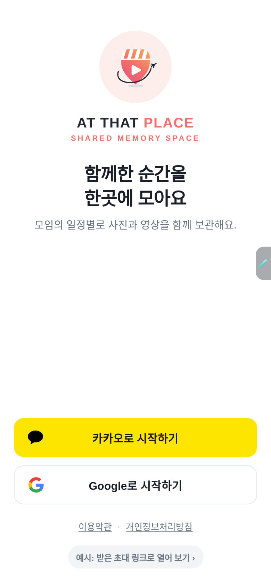
프로토타입 실행 캡처(참고) · LOGIN @ 870be87 · 웹고객 UI 원본: Google 버튼 포함. 제품은 사용자 확정에 따라 카카오만 표시(A16). 실제 OAuth 검수 아님.
원본과 실행 경로
src/prototype/screens/LoginScreen.tsx
비데모 /prototype 첫 진입
/prototype
UI02 · 가입 동의·표시명
UI 담당 전체 화면 정리 · 적용 기준 · P04-1 처음 화면 · UI02
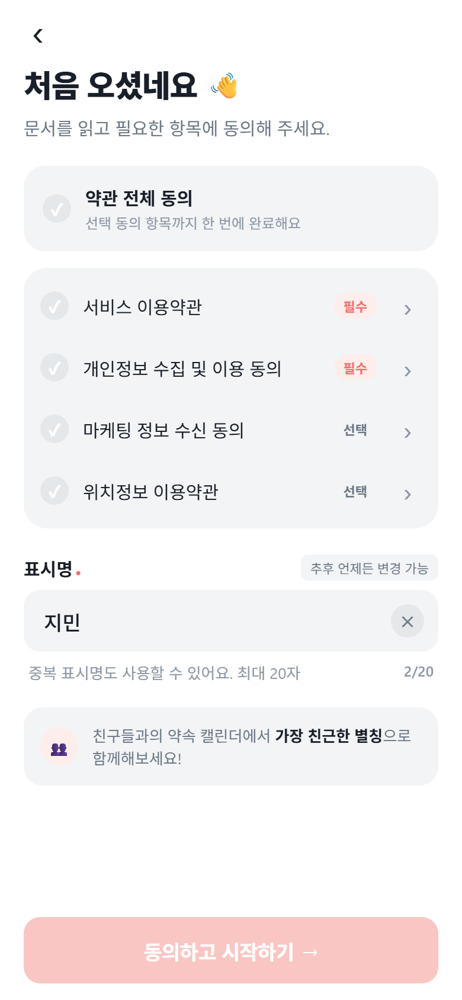
UI 담당 전체 화면 정리 · 적용 기준 · P04-1 처음 화면처음 오신 분이 약관에 동의하고 모임에서 쓸 이름을 정합니다.
"약관 전체 동의"로 한 번에 체크
서비스 이용약관·개인정보 수집은 필수, 마케팅·위치정보는 선택
표시명은 최대 20자, 중복도 가능, 나중에 변경 가능
필수 동의와 표시명이 있어야 "동의하고 시작하기"가 켜짐
적용 기준
docs/AT_THAT_PLACE_전체화면정리.pptx · 870be871c97e8687a2ae7592fcbc48f59875e148 · P04-1_가입_동의_표시명_처음_화면.png
v3에서 바뀐 결정
D02 가입 동의: 이용약관 체크 1개+개인정보 고지 → 전체 동의+서비스 이용약관·개인정보 수집 및 이용(필수)·마케팅·위치정보(선택), 버전 단위
D03 이름: 표시명 20자 → 가입 표시명 1~20, 닉네임 변경 입력 12(같은 필드, Q2)
제품 구현 계약 · 가입 동의와 표시명
① 전부 동의 상태면 전부 해제, 아니면 전부 동의. 문서 로딩 전 비활성. ② 행=체크 토글, ›=문서 보기(버전·시행일·본문·‘동의하고 닫기’). 서버 게시 문서 목록을 그대로 표시하며 모두 kind=consent.
동의는 문서별 {문서ID, 버전, 동의 여부}로 저장한다. 선택 미동의도 false로 기록. 버전이 바뀌면 자동 미동의, 제출 중 바뀌면 ‘동의 문서가 바뀌었어요. 바뀐 항목을 다시 확인해 주세요.’
③ NFC·trim 후 grapheme 1~20, 줄바꿈 제거, 중복 허용, 소셜 이름 제안. 21자 이상 보존+‘표시명은 20자까지 쓸 수 있어요’, 빈 값(입력을 벗어난 뒤) ‘표시명을 입력해 주세요’, 거부 ‘이 표시명은 사용할 수 없어요. 다른 이름을 입력해 주세요.’
④ 필수 2개 현재 버전 동의+표시명 유효일 때 활성. 성공 → 보류 초대 UI24 / UI03 교체. 뒤로가기(화면·시스템): ‘가입을 그만둘까요?’/‘입력한 내용은 저장되지 않아요.’/그만두기·계속하기 → 로그아웃, 보류 초대 유지.
제품 상태·API
문서 불러오는 중 / 문서 실패 ‘동의 문서를 불러오지 못했어요’+다시 시도 / 필수 미동의 / 표시명 빈 값·21자·거부 / 문서 버전 변경 / 제출 중
consentDocs, onboard
P04-2 · 가입 동의·표시명 · 약관 전체 동의
UI 담당 전체 화면 정리 · 적용 기준 · P04-2 약관 전체 동의 · UI02
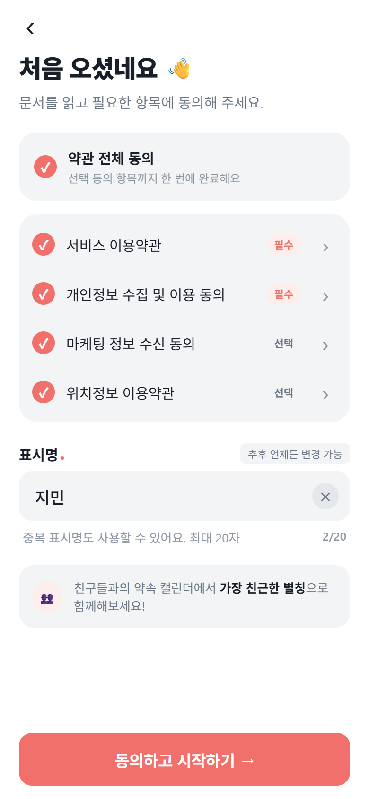
UI 담당 전체 화면 정리 · 적용 기준 · P04-2 약관 전체 동의처음 오신 분이 약관에 동의하고 모임에서 쓸 이름을 정합니다.
"약관 전체 동의"로 한 번에 체크
서비스 이용약관·개인정보 수집은 필수, 마케팅·위치정보는 선택
표시명은 최대 20자, 중복도 가능, 나중에 변경 가능
필수 동의와 표시명이 있어야 "동의하고 시작하기"가 켜짐
적용 기준
docs/AT_THAT_PLACE_전체화면정리.pptx · 870be871c97e8687a2ae7592fcbc48f59875e148 · P04-2_가입_동의_표시명_약관_전체_동의.png
P04-3 · 가입 동의·표시명 · 표시명을 비웠을 때
UI 담당 전체 화면 정리 · 적용 기준 · P04-3 표시명을 비웠을 때 · UI02
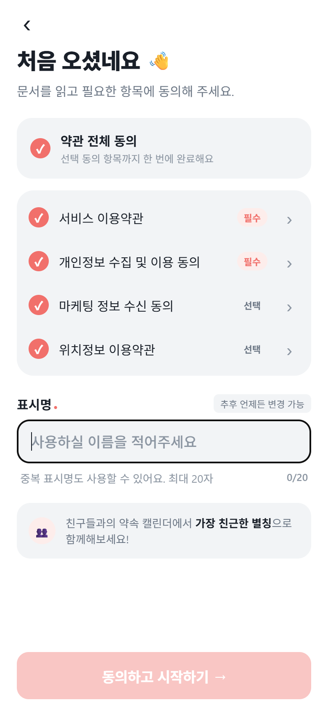
UI 담당 전체 화면 정리 · 적용 기준 · P04-3 표시명을 비웠을 때처음 오신 분이 약관에 동의하고 모임에서 쓸 이름을 정합니다.
"약관 전체 동의"로 한 번에 체크
서비스 이용약관·개인정보 수집은 필수, 마케팅·위치정보는 선택
표시명은 최대 20자, 중복도 가능, 나중에 변경 가능
필수 동의와 표시명이 있어야 "동의하고 시작하기"가 켜짐
적용 기준
docs/AT_THAT_PLACE_전체화면정리.pptx · 870be871c97e8687a2ae7592fcbc48f59875e148 · P04-3_가입_동의_표시명_표시명을_비웠을_때.png
ONBOARD · 가입 동의와 표시명
프로토타입 실행 캡처(참고) · ONBOARD @ 870be87 · 웹 · UI02
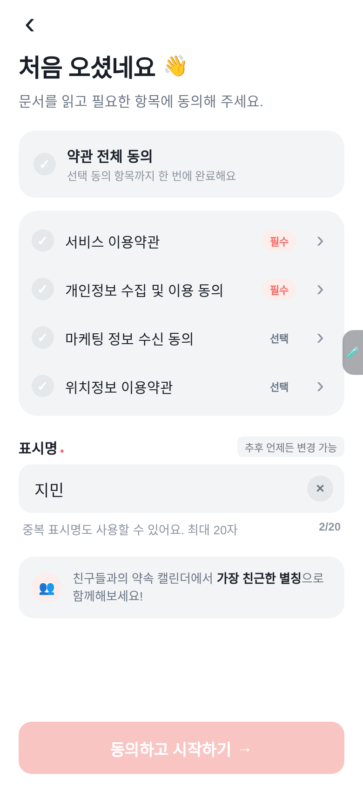
프로토타입 실행 캡처(참고) · ONBOARD @ 870be87 · 웹원본에는 전체동의·개인정보 필수·마케팅/위치 선택이 있다. 제품은 이용약관 체크1개+개인정보 고지로 수정(A17). 캡처의 약관 본문은 게시하지 않는다.
원본과 실행 경로
src/prototype/screens/OnboardingScreen.tsx
카카오 예시 로그인 → 신규 가입
/prototype/onboarding
UI03 · 내 모임 목록
UI 담당 전체 화면 정리 · 적용 기준 · P05-1 모임 목록 · UI03
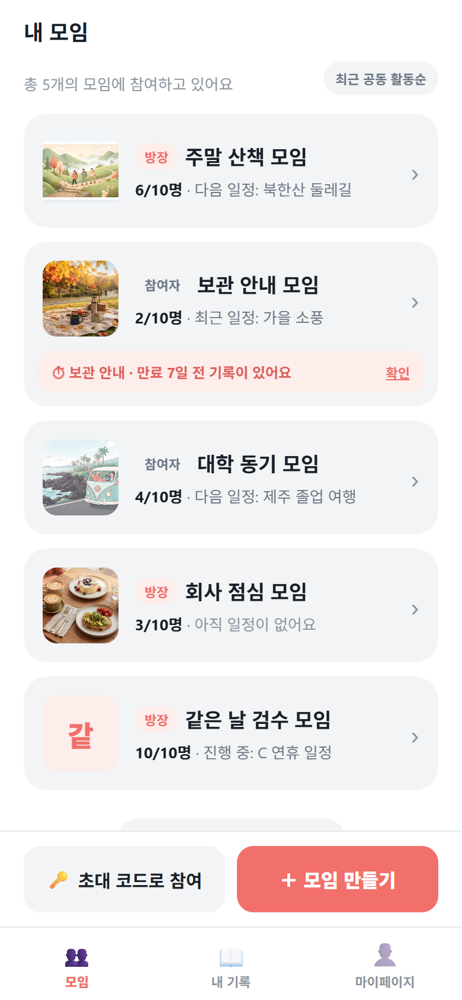
UI 담당 전체 화면 정리 · 적용 기준 · P05-1 모임 목록참여 중인 모임을 최근 공동 활동순으로 보여줍니다.
카드마다 대표 사진, 모임 이름, 방장/참여자, 인원(n/10명), 다음·최근 일정
보관 기한이 7일 안으로 남은 모임은 빨간 안내와 "확인"
아래 버튼: 초대 코드 참여, 모임 만들기
하단 탭: 모임 · 내 기록 · 마이페이지
적용 기준
docs/AT_THAT_PLACE_전체화면정리.pptx · 870be871c97e8687a2ae7592fcbc48f59875e148 · P05-1_내_모임_목록_모임_목록.png
v3에서 바뀐 결정
D22 내 모임: 함께하는 모임·탭 설정 → 내 모임·역할 배지·탭 마이페이지
제품 구현 계약 · 내 모임
① 최근 공동 활동(생성·사진/이름 변경·참여·내보내기·나가기·일정·방문·기록 변경)순, 동률 생성시각·ID 역순. 열람은 활동이 아니다. 종료·참여 종료 모임 제외. 30개 커서(기존 유지).
② 카드: 모임 사진(없으면 이름 첫 글자)·역할 배지·이름 1줄·{n}/10명·대표 일정(취소 제외 진행 중→가까운 미래→최근 과거: 진행 중/다음 일정/최근 일정, 없으면 아직 일정이 없어요). 누르면 UI05.
③ 보관 마지막 날이 7일 이내면 띠, 1일 이하 ‘⏱ 내일 보관이 끝나는 기록이 있어요’, 당일 ‘오늘 보관이 끝나는 기록이 있어요’. ④ UI24 빈 코드. ⑤ UI04. ⑥ 내 기록 → UI22, 마이페이지 → UI36. 화면 복귀마다 재조회.
제품 상태·API
로딩(0개 단정 금지) / 실패 ‘모임 목록을 불러오지 못했어요’+다시 시도 / 빈 목록 ‘아직 함께하는 모임이 없어요’ / 보관 안내 / 다음 페이지
groupsList
P05-2 · 내 모임 목록 · 아래로 내린 모습
UI 담당 전체 화면 정리 · 적용 기준 · P05-2 아래로 내린 모습 · UI03
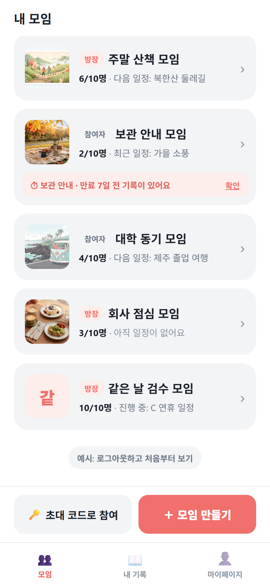
UI 담당 전체 화면 정리 · 적용 기준 · P05-2 아래로 내린 모습참여 중인 모임을 최근 공동 활동순으로 보여줍니다.
카드마다 대표 사진, 모임 이름, 방장/참여자, 인원(n/10명), 다음·최근 일정
보관 기한이 7일 안으로 남은 모임은 빨간 안내와 "확인"
아래 버튼: 초대 코드 참여, 모임 만들기
하단 탭: 모임 · 내 기록 · 마이페이지
적용 기준
docs/AT_THAT_PLACE_전체화면정리.pptx · 870be871c97e8687a2ae7592fcbc48f59875e148 · P05-2_내_모임_목록_아래로_내린_모습.png
GROUPS · 내 모임
프로토타입 실행 캡처(참고) · GROUPS @ 870be87 · 웹 · UI03
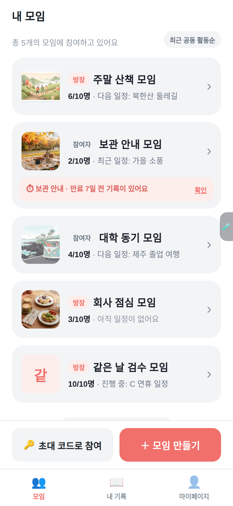
프로토타입 실행 캡처(참고) · GROUPS @ 870be87 · 웹카드·정렬·보관 안내·생성/초대 진입을 반영. 제품 탭은 모임/내 기록/마이페이지. 예시 모임 수나 보관값을 실제 값으로 사용하지 않는다.
원본과 실행 경로
src/prototype/screens/GroupsScreen.tsx
예시 가입 완료 → 내 모임
/prototype
UI04 · 모임 만들기
UI 담당 전체 화면 정리 · 적용 기준 · P06-1 입력 화면 · UI04
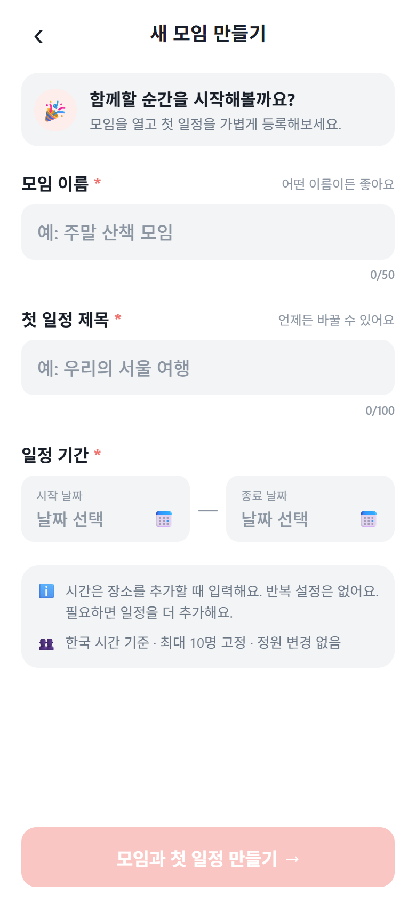
UI 담당 전체 화면 정리 · 적용 기준 · P06-1 입력 화면모임 이름과 첫 일정을 함께 만듭니다.
모임 이름(최대 50자), 첫 일정 제목(최대 100자)
일정 기간: 시작·종료 날짜를 달력에서 선택
모든 칸이 차야 "모임과 첫 일정 만들기"가 켜짐
정원은 10명 고정, 시간은 장소를 추가할 때 입력
적용 기준
docs/AT_THAT_PLACE_전체화면정리.pptx · 870be871c97e8687a2ae7592fcbc48f59875e148 · P06-1_모임_만들기_입력_화면.png
v3에서 바뀐 결정
D06 같은 날 일정: 겹침 안내 후 허용 → 하루에 일정 하나(SCHEDULE_DATE_TAKEN)
D07 일정 구조: 연속 기간 하나 → 날짜(일차) 묶음·기본 제목 n일차 · 일정 이름
D22 내 모임: 함께하는 모임·탭 설정 → 내 모임·역할 배지·탭 마이페이지
제품 구현 계약 · 모임과 첫 일정 생성
① 1~50, ② 1~100 grapheme, 줄바꿈 제거, 초과 보존+‘모임 이름은 50자까지 쓸 수 있어요’/‘일정 제목은 100자까지 쓸 수 있어요’. 공개 전 검사.
③ 기간 시트(월요일 시작, 첫 탭 시작·두 번째 탭 종료·같은 날 두 번 당일, 366일 초과 ‘일정은 366일까지 만들 수 있어요’, 과거 허용, 취소는 폼 불변). 배지 📅 당일/📅 n일 동안. 보관 기한이 지난 기간이면 ‘이 기간은 보관 기한이 지나 사진·영상을 올릴 수 없어요.’(생성은 허용).
④ 모임·방장 참여·첫 일정(날짜 분해) 원자 생성. 요청 키: 진입 시 생성, 입력 변경 시 새 키. 성공 ‘모임을 만들었어요’ → UI05 교체(첫 일정 시작일 선택). 응답 유실은 결과 확인 카드(UI35).
오류는 버튼 위: ‘사용할 수 없는 표현이 있어요. 모임 이름이나 일정 제목을 바꿔 주세요.’ / ‘참여 중인 모임이 100개라 더 만들 수 없어요.’ / ‘방장인 모임이 20개라 더 만들 수 없어요.’ 이탈: ‘만들기를 그만둘까요?’/나가기·계속 작성.
제품 상태·API
필수 누락 / 초과 입력 / 기간 시트 / 보관 기한 경과 경고 / 결과 확인 필요 / 한도·검사 거부
groupCreate, operationGet
P06-2 · 모임 만들기 · 일정 기간 고르기
UI 담당 전체 화면 정리 · 적용 기준 · P06-2 일정 기간 고르기 · UI04
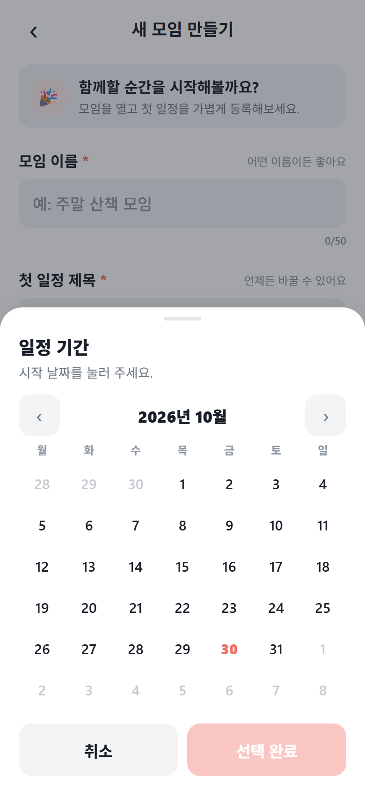
UI 담당 전체 화면 정리 · 적용 기준 · P06-2 일정 기간 고르기모임 이름과 첫 일정을 함께 만듭니다.
모임 이름(최대 50자), 첫 일정 제목(최대 100자)
일정 기간: 시작·종료 날짜를 달력에서 선택
모든 칸이 차야 "모임과 첫 일정 만들기"가 켜짐
정원은 10명 고정, 시간은 장소를 추가할 때 입력
적용 기준
docs/AT_THAT_PLACE_전체화면정리.pptx · 870be871c97e8687a2ae7592fcbc48f59875e148 · P06-2_모임_만들기_일정_기간_고르기.png
GROUP-NEW · 모임과 첫 일정 생성
프로토타입 실행 캡처(참고) · GROUP-NEW @ 870be87 · 웹 · UI04
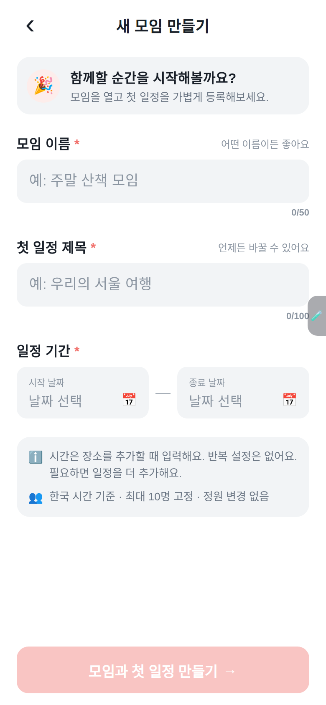
프로토타입 실행 캡처(참고) · GROUP-NEW @ 870be87 · 웹모임·방장 참여·첫 일정을 서버에서 원자 생성. 기간 시트·입력 보존·결과 불명 복구 반영.
원본과 실행 경로
src/prototype/screens/GroupCreateScreen.tsx
내 모임 → 모임 만들기
/prototype/group-new
PERIOD · 연속 기간 선택
브랜치 실행 캡처 · PERIOD @ 870be87 · 웹 · UI04
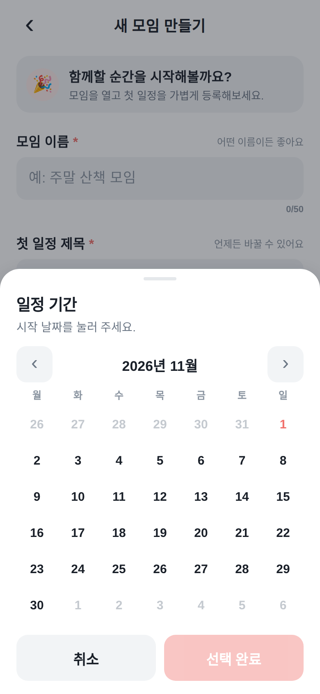
브랜치 실행 캡처 · PERIOD @ 870be87 · 웹월요일 시작·과거 허용·양끝 포함366일·취소 시 폼 미반영. 기존 비연속 날짜 시트 DATES와 혼동하지 않는다.
원본과 실행 경로
src/prototype/components/PeriodSheet.tsx
모임 만들기 → 기간 선택
/prototype/group-new
UI05 · 모임 달력
브랜치 실행 캡처 · VLOG-ENTRY @ 9f64b5e · 웹 · UI05
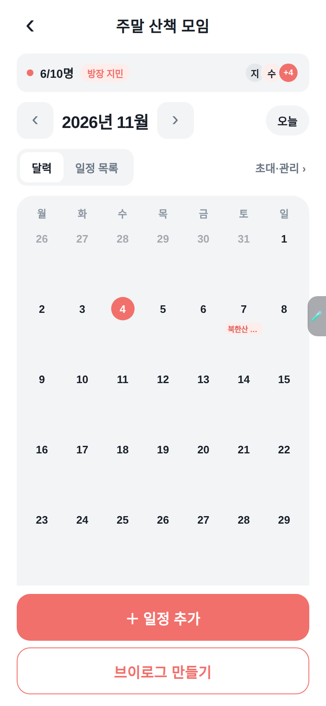
브랜치 실행 캡처 · VLOG-ENTRY @ 9f64b5e · 웹9f64b5e: 브이로그 버튼 추가. 방장에게 일정 추가도 표시.
원본과 실행 경로
src/prototype/screens/GroupCalendarScreen.tsx
모임 달력 하단
/prototype/group-calendar?groupId=g-walk
제품 구현 계약 · 모임 달력
① 인원 띠·아바타(앞 2명+N) → UI26. ② 월 이동·오늘·좌우 스와이프. 다른 달 날짜 탭 시 그 달로 이동. ③ 보기 방식은 기기에 기억. 초대·관리는 모든 참여자 → UI23.
달력: 월요일 시작 6주, 여러 날 일정은 날짜마다 한 줄(그날 제목: 날짜 제목 또는 {n}일차 · {일정 이름}, 하루 일정은 일정 이름). 칸당 3줄+N, 같은 주 줄 배정 시작일→긴 기간→생성순, 취소된 날 회색·취소선. 같은 날짜에 활성 일정은 하나.
④ 선택 날짜 목록 / 일정 목록 보기는 그 달 하루 항목을 날짜순(날짜 머리). ⑤ 카드: 제목 2줄·MM.DD·장소 n곳·칩(취소된 일정/첫 장소 외 n/진행 중/진행 예정). 카드 → UI08 그날. ⋯(방장·취소 아님) → 일정 변경(UI38)·닫기.
⑥ 방장만, 선택 날짜를 기본값으로 UI06. 빈 상태: ‘아직 일정이 없어요’+방장 ‘일정 추가로 첫 일정을 만들어 보세요.’/참여자 ‘방장이 일정을 추가하면 여기에 보여요.’, 날짜 ‘이 날에는 일정이 없어요’, 달 ‘이 달에는 일정이 없어요’.
9f64b5e: 하단 브이로그 만들기는 방장·참여자 모두 제공. 방장의 일정 추가와 함께 표시한다. 구 PPT에는 없는 최신 변경이므로 최신 실행 캡처를 우선한다.
제품 상태·API
처음 조회 스피너 / 실패 ‘일정을 불러오지 못했어요’ / 재조회 실패 띠 ‘최신 정보를 불러오지 못했어요 · 다시 시도’ / 늦은 응답 무시 / 접근 불가 ‘이 모임을 확인할 수 없어요.’ / 빈 상태 3종
calendar, membersList
CALENDAR · 이전 화면—현재 UI05로 대체됨 · 모임 달력
브랜치 실행 캡처 · CALENDAR @ 870be87 · 웹 · UI05
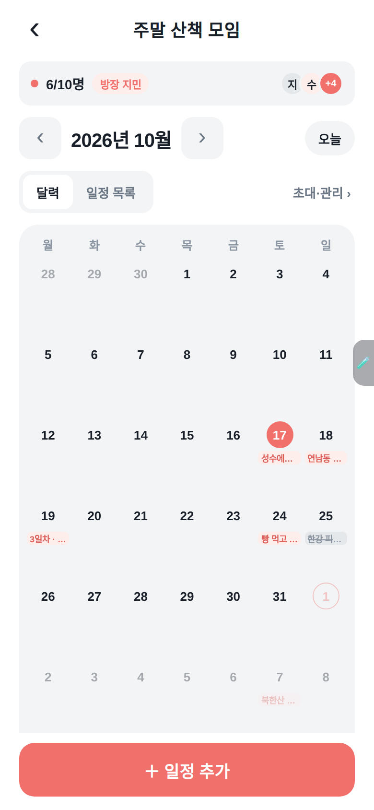
브랜치 실행 캡처 · CALENDAR @ 870be87 · 웹이전 화면—현재 UI05로 대체됨. 당시 관찰 근거로만 보존.
여러 날 일정을 하루씩 분해해 날짜 제목으로 표시. 카드는 요약을 거치지 않고 그날 장소로 이동한다.
같은 모임의 날짜 중복을 금지한다(전체 화면 정리 21번 규칙). 명세 v2.3 F07의 겹침 허용과 다르다(P1).
원본과 실행 경로
src/prototype/screens/GroupCalendarScreen.tsx
주말 산책 모임 → 2026-10-17
/prototype/group-calendar?groupId=g-walk&focusDate=2026-10-17
CALENDAR-LIST · 하루 단위 일정 목록
브랜치 실행 캡처 · CALENDAR-LIST @ 870be87 · 웹 · UI05
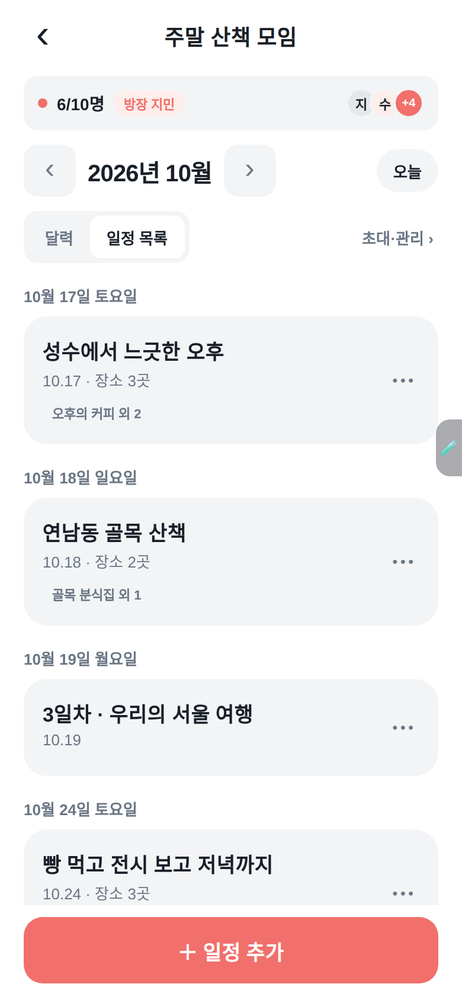
브랜치 실행 캡처 · CALENDAR-LIST @ 870be87 · 웹날짜 제목·하루 날짜·장소 수·첫 장소를 표시. 방장 ⋯ 메뉴에서 하루 편집.
원본과 실행 경로
src/prototype/screens/GroupCalendarScreen.tsx
모임 달력 → 일정 목록
/prototype/group-calendar?groupId=g-walk&focusDate=2026-10-17
UI06 · 일정 추가
UI 담당 전체 화면 정리 · 적용 기준 · P10-1 일정 추가 · UI06
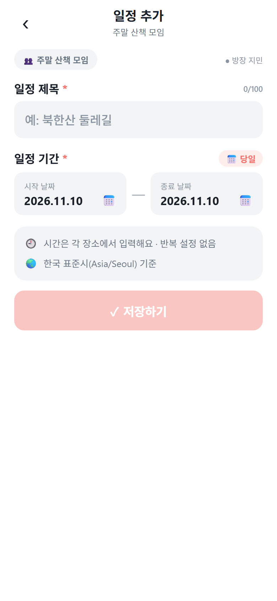
UI 담당 전체 화면 정리 · 적용 기준 · P10-1 일정 추가기간을 정해 만들면 1일차·2일차·3일차로 나뉩니다.
일정 제목(최대 100자)과 일정 기간(시작~종료)
"3일 동안"처럼 기간 일수를 배지로 표시
이미 일정이 있는 날짜가 들어 있으면 저장할 수 없음
하루에는 일정을 하나만 만들 수 있음
적용 기준
docs/AT_THAT_PLACE_전체화면정리.pptx · 870be871c97e8687a2ae7592fcbc48f59875e148 · P10-1_일정_추가_일정_추가.png
v3에서 바뀐 결정
D06 같은 날 일정: 겹침 안내 후 허용 → 하루에 일정 하나(SCHEDULE_DATE_TAKEN)
D07 일정 구조: 연속 기간 하나 → 날짜(일차) 묶음·기본 제목 n일차 · 일정 이름
제품 구현 계약 · 일정 추가
① 1~100 grapheme, 초과 보존. ② 기본값 = 달력 선택 날짜(당일). 기간 시트 규칙은 UI04와 같다(366일, 과거 허용).
③ 하루에 일정 하나: 같은 모임의 활성 일정이 쓰는 날짜(취소된 날 제외)가 기간에 있으면 고르는 즉시 안내하고 저장 비활성. 서버는 SCHEDULE_DATE_TAKEN으로 최종 판정(같은 모임 잠금).
④ 일정과 날짜(일차, 날짜순 1부터)를 함께 만든다. 요청 키로 중복 방지. 성공 ‘일정을 추가했어요’ → UI05. 거부 ‘사용할 수 없는 표현이 있어요. 일정 제목을 바꿔 주세요.’
이탈(제목 입력 후): ‘저장하지 않은 변경이 있어요’/저장·변경 버리기·계속 편집. 일반 참여자는 진입 불가(‘방장만 일정을 바꿀 수 있어요.’).
제품 상태·API
필수 누락 / 사용 중인 날짜 포함 / 366일 초과 / 저장 중 / 검사 거부 / 미저장 이탈
scheduleCreate, calendar
P10-2 · 일정 추가 · 기간 선택
UI 담당 전체 화면 정리 · 적용 기준 · P10-2 기간 선택 · UI06
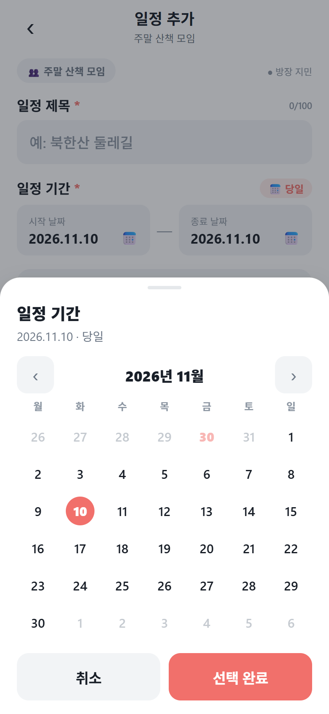
UI 담당 전체 화면 정리 · 적용 기준 · P10-2 기간 선택기간을 정해 만들면 1일차·2일차·3일차로 나뉩니다.
일정 제목(최대 100자)과 일정 기간(시작~종료)
"3일 동안"처럼 기간 일수를 배지로 표시
이미 일정이 있는 날짜가 들어 있으면 저장할 수 없음
하루에는 일정을 하나만 만들 수 있음
적용 기준
docs/AT_THAT_PLACE_전체화면정리.pptx · 870be871c97e8687a2ae7592fcbc48f59875e148 · P10-2_일정_추가_기간_선택.png
SCHEDULE-EDIT · 일정 추가와 변경
프로토타입 실행 캡처(참고) · SCHEDULE-EDIT @ 870be87 · 웹 · UI06
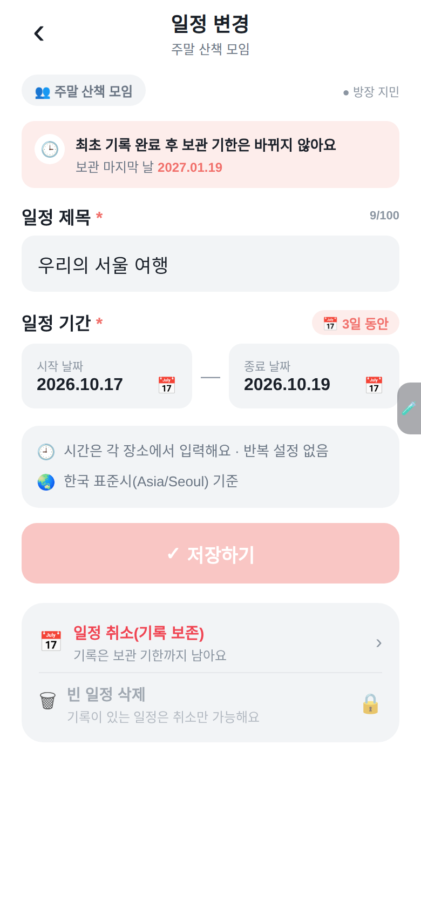
프로토타입 실행 캡처(참고) · SCHEDULE-EDIT @ 870be87 · 웹기간 밖 영향·취소/빈 일정 삭제·충돌 복구를 반영. 실제 기록/진행 작업 수와 groupId/scheduleId 소속은 서버 검사(A19/A22).
원본과 실행 경로
src/prototype/screens/ScheduleEditScreen.tsx
방장 일정 메뉴 → 일정 변경
/prototype/schedule-edit?groupId=g-walk&scheduleId=sc-seoul
UI38 · 하루 일정 변경
UI 담당 전체 화면 정리 · 적용 기준 · P09-1 여러 날 일정의 하루 · UI38
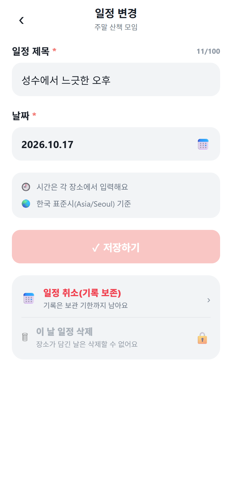
UI 담당 전체 화면 정리 · 적용 기준 · P09-1 여러 날 일정의 하루⋯ → 일정 변경을 누르면 그날 하나만 고칩니다.
제목과 날짜만 고침 (기간 칸 없음)
다른 일정이 있는 날짜는 연하게 표시되어 고를 수 없음
"일정 취소(기록 보존)": 그날만 취소, 기록은 남음
"이 날 일정 삭제": 장소가 없는 날만 가능
날짜를 옮기면 일차 번호가 자동으로 다시 매겨짐
적용 기준
docs/AT_THAT_PLACE_전체화면정리.pptx · 870be871c97e8687a2ae7592fcbc48f59875e148 · P09-1_하루_일정_변경_여러_날_일정의_하루.png
v3에서 바뀐 결정
D06 같은 날 일정: 겹침 안내 후 허용 → 하루에 일정 하나(SCHEDULE_DATE_TAKEN)
D07 일정 구조: 연속 기간 하나 → 날짜(일차) 묶음·기본 제목 n일차 · 일정 이름
D08 일정 변경: 일정 기간 변경·취소·빈 일정 삭제 → 하루 단위 제목·날짜 변경·취소·삭제(UI38), 전체 기간 변경 화면 없음
제품 구현 계약 · 하루 일정 변경
달력·목록 카드의 ⋯ → 일정 변경으로 연다. 그날 하나의 제목과 날짜만 고친다(기간 칸 없음). ① 초기값은 날짜 제목 또는 기본 제목, 1~100. 하루·여러 날 모두 날짜 제목으로 저장하며 부모 일정명 유지(Q15).
② 날짜 시트(‘날짜 변경’, 월요일 시작): 다른 일정이 쓰는 날짜와 같은 일정의 다른 날짜는 연하게·선택 불가. 옮기면 방문·기록·진행 업로드 날짜도 함께 옮기고 일차 재번호·시작/종료 재계산. 거부 ‘이미 다른 일정이 있는 날짜예요. 하루에는 일정을 하나만 만들 수 있어요.’
③ ‘이 날 일정을 취소할까요?’/제목/‘기록은 보관 기한까지 남아요. 취소하면 누구도 새 사진·영상을 올릴 수 없고 되돌릴 수 없어요.’/일정 취소하기·돌아가기. 그날만 취소, 모든 날이 취소되면 일정 취소. 취소된 날짜는 다른 일정이 쓸 수 있다.
④ 장소가 담긴 날은 🔒 ‘장소가 담긴 날은 삭제할 수 없어요’(누르면 ‘…장소를 먼저 비워 주세요.’). 장소 없으면 ‘이 날 일정을 삭제할까요?’/‘되돌릴 수 없어요.’. 마지막 날이면 일정 삭제(기록·진행 업로드가 있으면 거부, Q9). 이탈: ‘저장하지 않고 나갈까요?’/나가기·계속 편집.
Q15: 하루/여러 날 모두 날짜 제목 1~100자, 부모 일정명 유지. Q18 추가 설계(PM 확인 대기): 날짜만 변경할 때 title 생략; 프로토타입은 기본 제목 문자열 저장. UI12와 같은 day_plans.title.
제품 상태·API
사용 중인 날짜 선택 불가 / 변경 없음 비활성 / 장소 있는 날 삭제 잠금 / 취소 확인 / 마지막 날 삭제 / 버전 충돌 / 방장 아님 / 취소된 날 진입 불가
scheduleDetail, dayUpdate, dayCancel, dayDelete
P09-2 · 하루 일정 변경 · 하루짜리 일정
UI 담당 전체 화면 정리 · 적용 기준 · P09-2 하루짜리 일정 · UI38
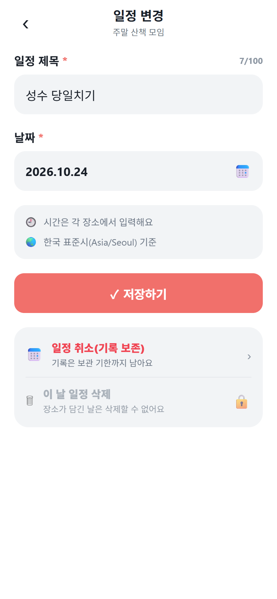
UI 담당 전체 화면 정리 · 적용 기준 · P09-2 하루짜리 일정⋯ → 일정 변경을 누르면 그날 하나만 고칩니다.
제목과 날짜만 고침 (기간 칸 없음)
다른 일정이 있는 날짜는 연하게 표시되어 고를 수 없음
"일정 취소(기록 보존)": 그날만 취소, 기록은 남음
"이 날 일정 삭제": 장소가 없는 날만 가능
날짜를 옮기면 일차 번호가 자동으로 다시 매겨짐
적용 기준
docs/AT_THAT_PLACE_전체화면정리.pptx · 870be871c97e8687a2ae7592fcbc48f59875e148 · P09-2_하루_일정_변경_하루짜리_일정.png
P09-3 · 하루 일정 변경 · 날짜 변경 달력
UI 담당 전체 화면 정리 · 적용 기준 · P09-3 날짜 변경 달력 · UI38
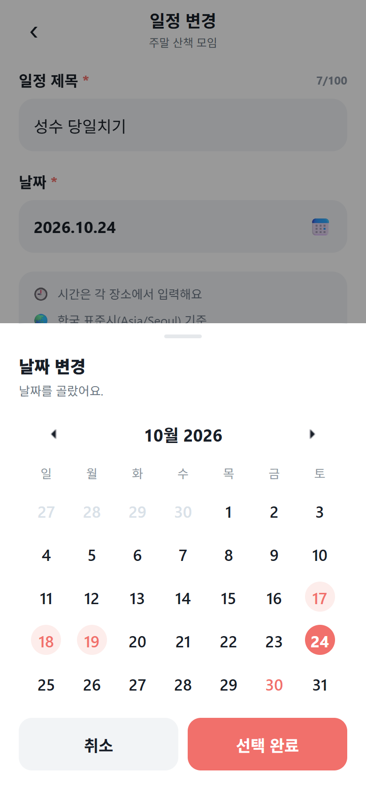
UI 담당 전체 화면 정리 · 적용 기준 · P09-3 날짜 변경 달력⋯ → 일정 변경을 누르면 그날 하나만 고칩니다.
제목과 날짜만 고침 (기간 칸 없음)
다른 일정이 있는 날짜는 연하게 표시되어 고를 수 없음
"일정 취소(기록 보존)": 그날만 취소, 기록은 남음
"이 날 일정 삭제": 장소가 없는 날만 가능
날짜를 옮기면 일차 번호가 자동으로 다시 매겨짐
적용 기준
docs/AT_THAT_PLACE_전체화면정리.pptx · 870be871c97e8687a2ae7592fcbc48f59875e148 · P09-3_하루_일정_변경_날짜_변경_달력.png
P09-4 · 하루 일정 변경 · 일정 취소 확인
UI 담당 전체 화면 정리 · 적용 기준 · P09-4 일정 취소 확인 · UI38
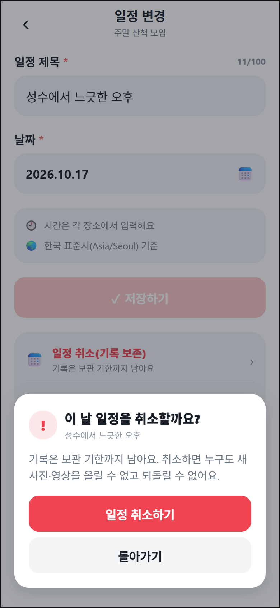
UI 담당 전체 화면 정리 · 적용 기준 · P09-4 일정 취소 확인⋯ → 일정 변경을 누르면 그날 하나만 고칩니다.
제목과 날짜만 고침 (기간 칸 없음)
다른 일정이 있는 날짜는 연하게 표시되어 고를 수 없음
"일정 취소(기록 보존)": 그날만 취소, 기록은 남음
"이 날 일정 삭제": 장소가 없는 날만 가능
날짜를 옮기면 일차 번호가 자동으로 다시 매겨짐
적용 기준
docs/AT_THAT_PLACE_전체화면정리.pptx · 870be871c97e8687a2ae7592fcbc48f59875e148 · P09-4_하루_일정_변경_일정_취소_확인.png
DAY-EDIT · 하루 일정 변경
브랜치 실행 캡처 · DAY-EDIT @ 870be87 · 웹 · UI38
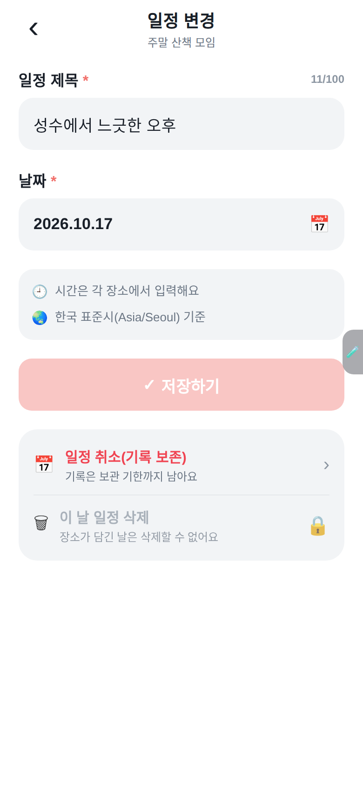
브랜치 실행 캡처 · DAY-EDIT @ 870be87 · 웹제목100자·단일 날짜 변경·그날만 취소·장소 없는 날 삭제. UI38 하루 일정 변경이며 UI06의 기간 변경과 별도 화면.
명세 v2.3의 날짜 제목30자·일정 전체 취소/삭제 계약과 다르다(P2).
원본과 실행 경로
src/prototype/screens/DayEditScreen.tsx
하루 일정 메뉴 → 일정 변경
/prototype/schedule-edit?groupId=g-walk&scheduleId=sc-seoul&date=&dayId=day-1
DAY-DATE · 하루 날짜 변경 시트
브랜치 실행 캡처 · DAY-DATE @ 870be87 · 웹 · UI38
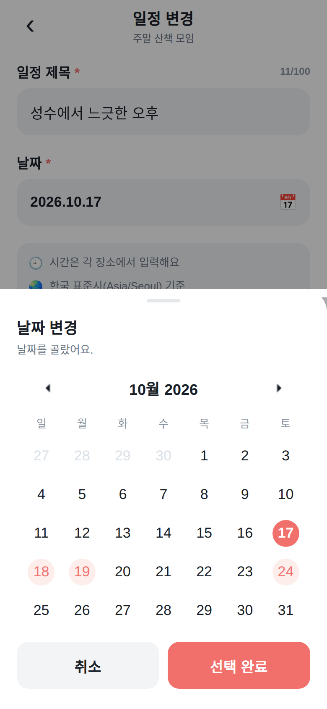
브랜치 실행 캡처 · DAY-DATE @ 870be87 · 웹단일 선택. 다른 활성 일정/날짜는 선택 불가. 저장 전에는 폼 값만 변경.
원본과 실행 경로
src/prototype/components/DatePickSheet.tsx
하루 일정 변경 → 날짜
/prototype/schedule-edit?groupId=g-walk&scheduleId=sc-seoul&date=&dayId=day-1
DAY-CANCEL · 하루 일정 취소 확인
브랜치 실행 캡처 · DAY-CANCEL @ 870be87 · 웹 · UI38
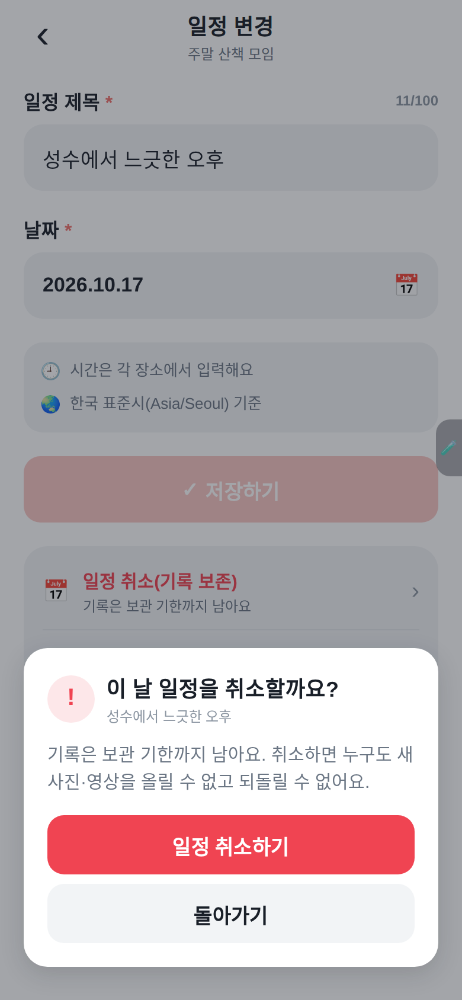
브랜치 실행 캡처 · DAY-CANCEL @ 870be87 · 웹이 날만 취소·기록 보존·되돌리기 불가 안내. 실제 업로드 차단/보존 경로는 검수하지 않았다.
원본과 실행 경로
src/prototype/screens/DayEditScreen.tsx
하루 일정 변경 → 일정 취소
/prototype/schedule-edit?groupId=g-walk&scheduleId=sc-seoul&date=&dayId=day-1
UI08 · 날짜별 장소
UI 담당 전체 화면 정리 · 적용 기준 · P14-1 10월 17일 · UI08
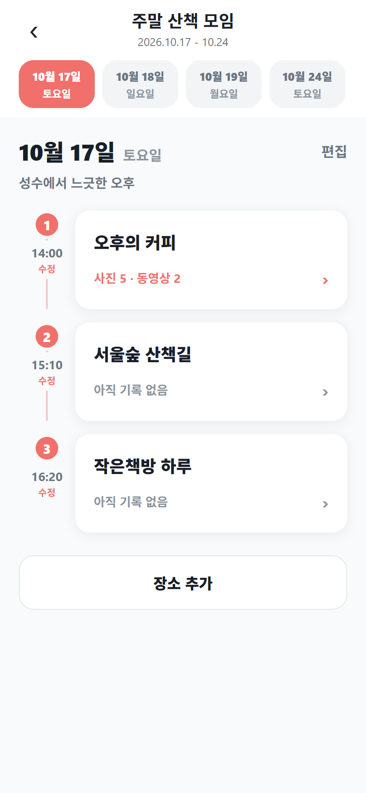
UI 담당 전체 화면 정리 · 적용 기준 · P14-1 10월 17일모임의 모든 일정 날짜가 탭으로 나옵니다.
위 제목은 모임 이름, 탭은 모임 전체 날짜(취소된 날 제외)
날짜 아래에 그날의 제목
타임라인: 방문 시간, 장소 카드, 사진·동영상 개수
"편집"은 순서 편집, "장소 추가"는 장소 검색
적용 기준
docs/AT_THAT_PLACE_전체화면정리.pptx · 870be871c97e8687a2ae7592fcbc48f59875e148 · P14-1_날짜별_장소_10월_17일.png
v3에서 바뀐 결정
D07 일정 구조: 연속 기간 하나 → 날짜(일차) 묶음·기본 제목 n일차 · 일정 이름
D09 달력: 여러 날 띠·카드 → 일정 상세 → 하루 한 줄·진행 칩·카드 → 날짜별 장소
D10 날짜별 장소: 한 일정의 날짜 → 모임 이름·모임 전체 활성 날짜 탭
D11 방문 시간: 추가 시 5분 단위 → 시간 없이 추가 후 1분 단위 휠
제품 구현 계약 · 날짜별 장소
① 제목 = 모임 이름. 탭 = 모임의 모든 활성 일정의 취소 안 된 날짜(날짜순, 한 화면 4칸, 가로 스크롤·스냅·선택 탭 자동 스크롤). 탭이 1개면 숨김. 취소된 날 카드로 들어오면 그날을 보기 전용으로 연다(Q10).
② 날짜 머리+편집(→UI12). 날짜 제목 또는 기본 제목({n}일차 · {일정 이름}). 빈 날 ‘가고 싶은 곳을 담아 하루를 채워보세요.’
③ 타임라인: 순번·세로선·시간(HH:mm/시간 미정)+수정(방문 시간 창, 확인 즉시 저장)·장소 카드(이름 2줄, 사진 a · 동영상 b 또는 아직 기록 없음) → UI13. 방금 추가한 장소는 ‘추가됨’ 강조.
④ UI10. 15개 도달·취소된 날·만료 일정이면 비활성과 사유. 일정 전체·장소 미지정 기록 진입은 하단에 추가(기존 유지).
모임 전체 탭은 groupDays 커서 조회(Q17: 기본·최대 60개는 추가 설계·확인 대기). 월 달력 응답만 재사용하지 않는다. 탭은 (scheduleId,date), 취소 날짜는 원래 일정 상세로 보기 전용 진입.
제품 상태·API
날짜 없음 ‘이 일정에는 날짜가 없어요.’ / 빈 날 / 15개 도달 / 취소된 날 보기 전용 / 만료 / 권한 상실
groupDays, calendar, scheduleDetail, planUpdate, mediaList
P14-2 · 날짜별 장소 · 10월 24일
UI 담당 전체 화면 정리 · 적용 기준 · P14-2 10월 24일 · UI08
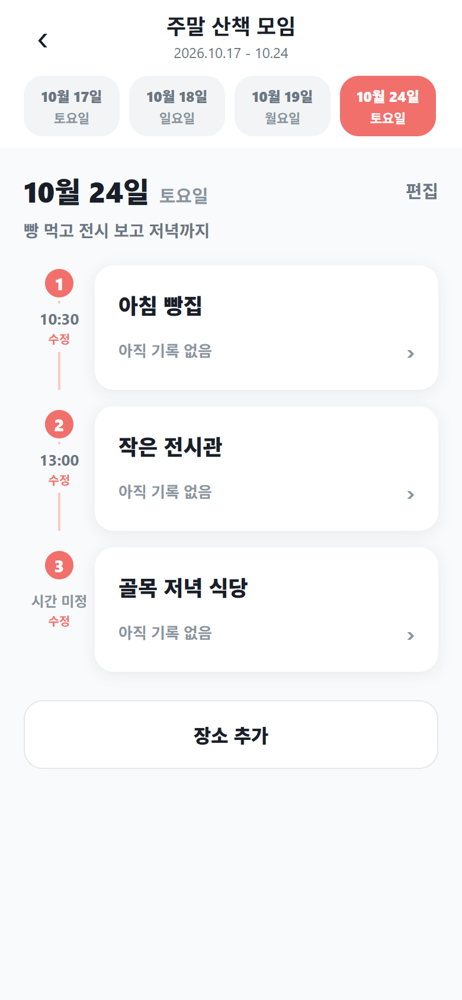
UI 담당 전체 화면 정리 · 적용 기준 · P14-2 10월 24일모임의 모든 일정 날짜가 탭으로 나옵니다.
위 제목은 모임 이름, 탭은 모임 전체 날짜(취소된 날 제외)
날짜 아래에 그날의 제목
타임라인: 방문 시간, 장소 카드, 사진·동영상 개수
"편집"은 순서 편집, "장소 추가"는 장소 검색
적용 기준
docs/AT_THAT_PLACE_전체화면정리.pptx · 870be871c97e8687a2ae7592fcbc48f59875e148 · P14-2_날짜별_장소_10월_24일.png
S01 · 일정 요약
프로토타입 실행 캡처(참고) · S01 @ 870be87 · 웹 · UI08
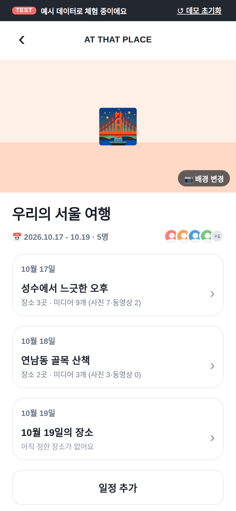
프로토타입 실행 캡처(참고) · S01 @ 870be87 · 웹헤더는 뒤로가기와 브랜드. 16:9 대표 배너는 화면 가로 끝까지 표시한다.
날짜 카드에 날짜·제목·장소/미디어 수를 표시한다. DAY 배지·썸네일·카드 안 추가 버튼은 없다.
일정 추가는 비연속 날짜 다중 선택 데모다. 제품의 연속 기간 변경(UI06)과 달라 A01에서 결정한다.
원본과 실행 경로
src/prototype/screens/ItinerarySummaryScreen.tsx
서울 여행 일정 열기
/prototype/itinerary?tripId=trip1&itineraryId=itin-seoul-1&dayId=day-1
M4 · 배경 사진 시트
브랜치 실행 캡처 · M4 @ 870be87 · 웹 · UI08
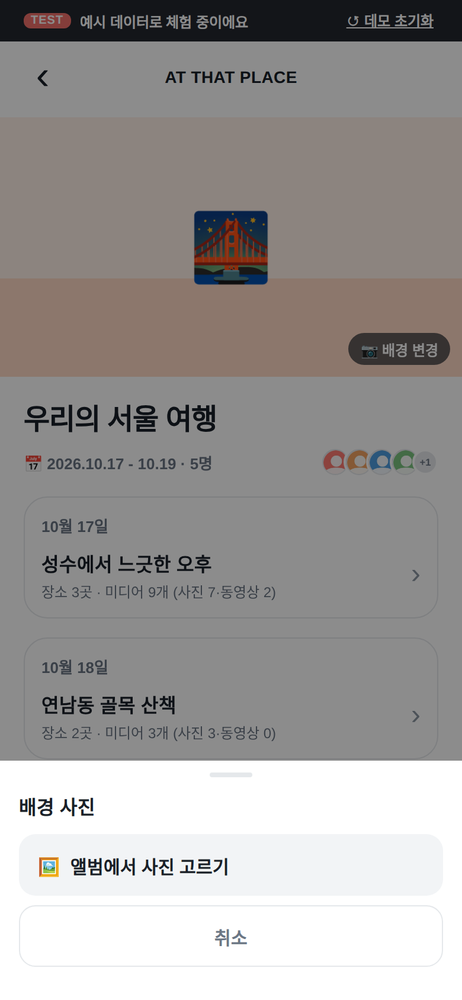
브랜치 실행 캡처 · M4 @ 870be87 · 웹앨범에서 사진 고르기·취소. 직접 선택한 사진이 있으면 기본 이미지로 되돌리기 표시.
원본과 실행 경로
src/prototype/components/CoverEditSheet.tsx
S01 → 배경 사진 변경
/prototype/itinerary?tripId=trip1&itineraryId=itin-seoul-1&dayId=day-1
S02 · 날짜별 장소
브랜치 실행 캡처 · S02 @ 870be87 · 웹 · UI08
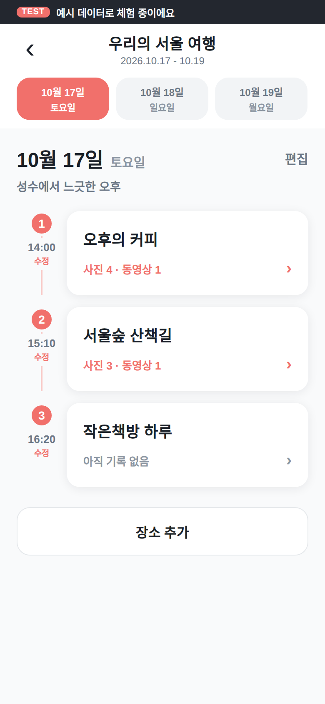
브랜치 실행 캡처 · S02 @ 870be87 · 웹날짜 탭은 최대 4개씩 가로 스크롤. 선택 날짜의 장소를 순서·방문 시간과 함께 표시한다.
장소 이미지는 생략하고 장소명·사진/영상 수·기록 진입 링크를 표시한다.
편집은 빈 날짜에도 제공한다. 장소 추가는 S03, 장소 카드는 S04로 이동한다.
원본과 실행 경로
src/prototype/screens/ItineraryScreen.tsx
S01 → 날짜 카드
/prototype/itinerary-day?tripId=trip1&itineraryId=itin-seoul-1&dayId=day-1
S02-empty · 빈 날짜의 장소
브랜치 실행 캡처 · S02-empty @ 870be87 · 웹 · UI08
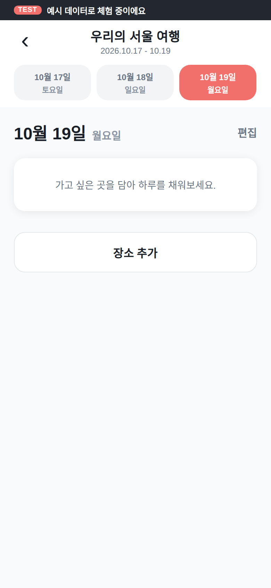
브랜치 실행 캡처 · S02-empty @ 870be87 · 웹빈 상태에서도 편집과 장소 추가를 제공한다.
원본과 실행 경로
src/prototype/screens/ItineraryScreen.tsx
장소가 없는 10월 19일 선택
/prototype/itinerary-day?tripId=trip1&itineraryId=itin-seoul-1&dayId=day-3
S02-oneday · 하루 일정
브랜치 실행 캡처 · S02-oneday @ 870be87 · 웹 · UI08
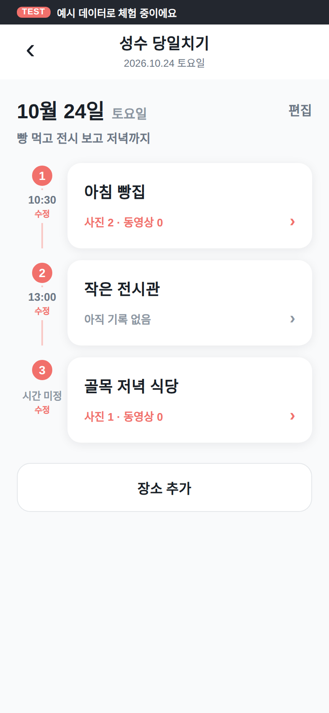
브랜치 실행 캡처 · S02-oneday @ 870be87 · 웹날짜가 하나인 일정에는 날짜 탭을 표시하지 않는다.
원본과 실행 경로
src/prototype/screens/ItineraryScreen.tsx
성수 당일치기 → 날짜별 장소
/prototype/itinerary-day?tripId=trip1&itineraryId=itin-seoul-oneday&dayId=day-1
DATES · 날짜 추가 달력
브랜치 실행 캡처 · DATES @ 870be87 · 웹 · UI08
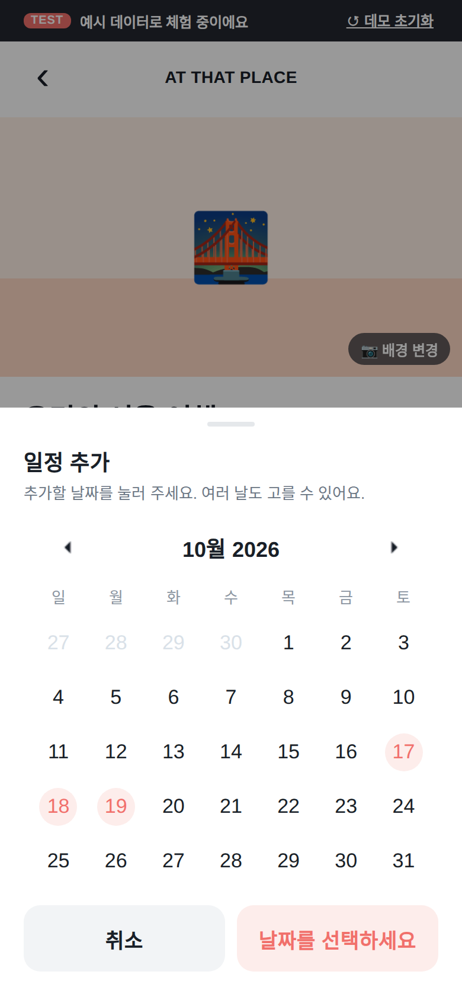
브랜치 실행 캡처 · DATES @ 870be87 · 웹비연속 날짜 선택·최대30개·일요일 시작. 담당 명세의 하루 연장 설명과도 다르다.
제품은 방장만 연속 기간366일·월요일 시작·버전/영향 확인. 데모 동작 채택은 A01 결정 전 보류.
원본과 실행 경로
src/prototype/components/DatePickSheet.tsx
S01 → 일정 추가
/prototype/itinerary?tripId=trip1&itineraryId=itin-seoul-1&dayId=day-1
S02-tabs · 5일 일정의 날짜 탭
브랜치 실행 캡처 · S02-tabs @ 870be87 · 웹 · UI08
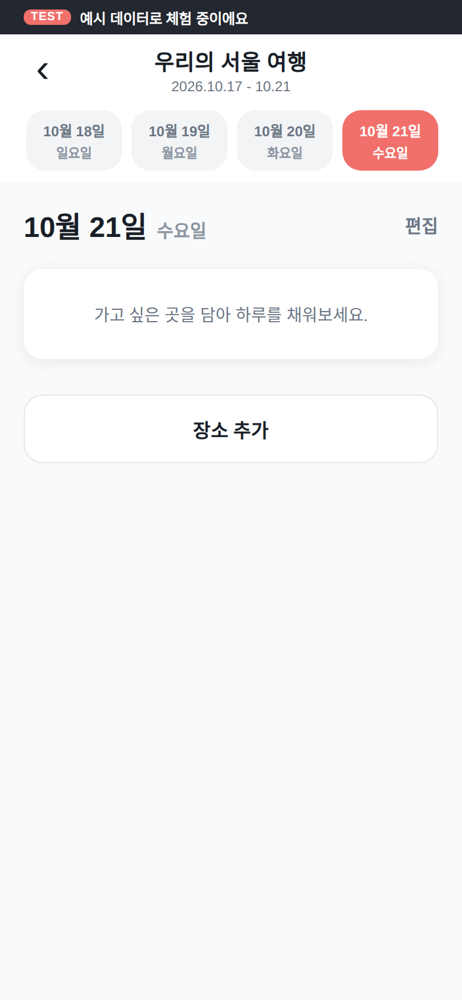
브랜치 실행 캡처 · S02-tabs @ 870be87 · 웹추가한 날짜로 기간이 늘어나며 선택 탭이 온전히 보이도록 자동 스크롤한다.
최대 4개 탭이 여백 안에 표시된다. 데모의 최대 30일은 제품 명세의 366일과 다르다.
원본과 실행 경로
src/prototype/screens/ItineraryScreen.tsx
S01에서 날짜 2개 추가 → 마지막 날짜 열기
/prototype/itinerary-day?tripId=trip1&itineraryId=itin-seoul-1&dayId=day-5
GROUP-DAYS · 모임 전체 날짜 탭
브랜치 실행 캡처 · GROUP-DAYS @ 870be87 · 웹 · UI08
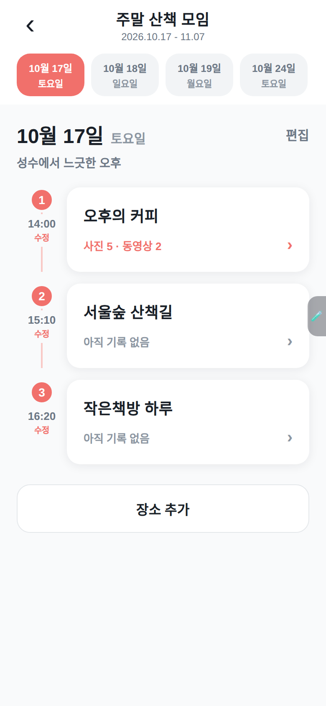
브랜치 실행 캡처 · GROUP-DAYS @ 870be87 · 웹모임 이름·모든 활성 일정 날짜순 탭. 선택한 일정/날짜 ID를 장소·편집·기록에 전달.
취소 날짜가 탭에서 제외되므로 취소 기록·미지정·기간 밖 접근은 별도 유지해야 한다(P11).
원본과 실행 경로
src/prototype/screens/ItineraryScreen.tsx
모임 달력의 하루 카드 → 날짜별 장소
/prototype/itinerary-day?tripId=trip1&itineraryId=itin-seoul-1&dayId=day-1&groupId=g-walk
UI09 · 사람별 보기·올리기
UI 담당 전체 화면 정리 · 적용 기준 · P17-1 사람별 보기 · UI09
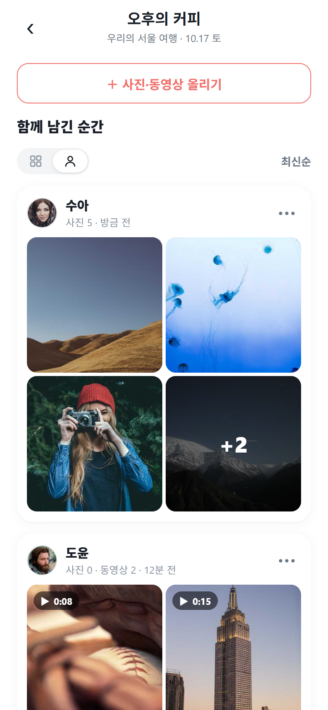
UI 담당 전체 화면 정리 · 적용 기준 · P17-1 사람별 보기아이콘 토글로 사람별로 모아 보고, 새로 올립니다.
사람마다 올린 사진·동영상을 격자로 묶어서 보기
"+N"으로 펼치고 "접기"
⋯ → "사진 다운받기"
올리기 창: 최대 10개, 중복 파일 제외
참고: 다운로드와 실제 업로드는 아직 연결 전입니다.
적용 기준
docs/AT_THAT_PLACE_전체화면정리.pptx · 870be871c97e8687a2ae7592fcbc48f59875e148 · P17-1_사람별_보기_올리기_사람별_보기.png
v3에서 바뀐 결정
D16 기록 보기: 시간순·사람별 묶음 → 사진별·사람별·최신순(기본)/오래된순
D17 선택 저장: 길게 눌러·휴대폰 저장 → 선택 → n개 다운받기·사람별 ⋯ → 사진 다운받기
D18 감상: 핀치 확대 → 1~4배 단계·두 번 탭·동영상 자동 재생
D24 기록 정렬 기준: 촬영 시각 → 게시 묶음 업로드 완료 시각
제품 구현 계약 · 사람별 보기
① 사진별(UI13)과 같은 화면의 보기 전환(아이콘, 접근성 ‘사진별 보기’/‘사람별 보기’). 정렬 최신순(기본)/오래된순은 게시 묶음 업로드 완료 시각 기준. 화면을 떠나면 처음 상태.
② 작성자 카드(정렬된 목록에서 처음 나온 순서): 아바타·이름·사진 a · 동영상 b · HH:mm·⋯. 격자 1개 전체 폭 4:3 / 2개 정사각 2칸 / 3개 위 1(2:1)+아래 2 / 4개 이상 앞 4칸, 5개 이상은 4번째 칸에 +{전체-3}.
③ +N → 전체 펼침(정사각 2열)+‘접기 ⌃’. 칸 누름 → UI18. ⋯ → ‘사진 다운받기’(그 사람의 이 장소 파일 전체, 동영상 포함, UI21). 설명은 확대 보기에서. 차단한 작성자 카드는 없다.
일정 전체 기록·장소 미지정 기록(기존 유지)도 같은 사진별/사람별·정렬 규칙으로 연다.
Q16 추가 설계·PM 확인 대기: 묶음 첫 파일 완료 시각을 임시 정렬 기준으로 사용. 후속 완료 시 재배치 여부를 확인한다.
제품 상태·API
기록 없음 / 로딩·실패 / 펼침·접기 / 차단·운영 제한 반영 / 다운받기 진행
mediaList, mediaStream, avatarStream, exportCreate
P17-2 · 사람별 보기·올리기 · ⋯ 메뉴
UI 담당 전체 화면 정리 · 적용 기준 · P17-2 ⋯ 메뉴 · UI09
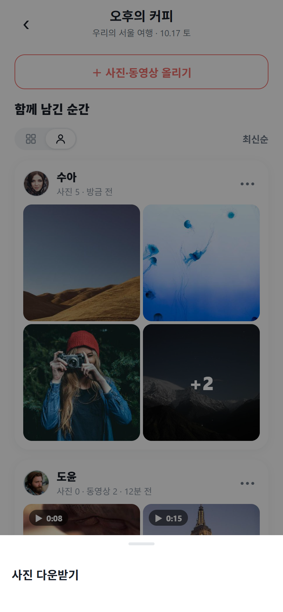
UI 담당 전체 화면 정리 · 적용 기준 · P17-2 ⋯ 메뉴아이콘 토글로 사람별로 모아 보고, 새로 올립니다.
사람마다 올린 사진·동영상을 격자로 묶어서 보기
"+N"으로 펼치고 "접기"
⋯ → "사진 다운받기"
올리기 창: 최대 10개, 중복 파일 제외
참고: 다운로드와 실제 업로드는 아직 연결 전입니다.
적용 기준
docs/AT_THAT_PLACE_전체화면정리.pptx · 870be871c97e8687a2ae7592fcbc48f59875e148 · P17-2_사람별_보기_올리기_메뉴.png
S04-people · 장소별 기록 · 사람별
프로토타입 실행 캡처(참고) · S04-people @ 870be87 · 웹 · UI09
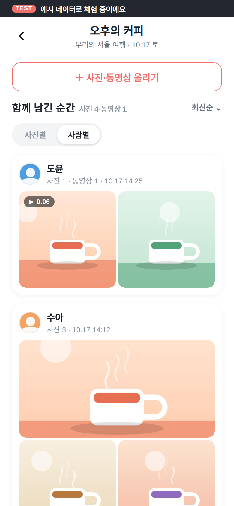
프로토타입 실행 캡처(참고) · S04-people @ 870be87 · 웹작성자별 카드와 사진 격자. 여러 장은 +N으로 펼치거나 접는다.
이 캡처는 한 방문의 사람별 보기다. 일정 전체·기간 밖·장소 미지정 기록 조회는 기존 제품 계약으로 남는다.
원본과 실행 경로
src/prototype/screens/PlaceRecordsScreen.tsx
S04 → 사람별 보기
/prototype/place-records?tripId=trip1&itineraryId=itin-seoul-1&dayId=day-1&placeId=demo-cafe
UI10 · 장소 검색·순서 편집
UI 담당 전체 화면 정리 · 적용 기준 · P15-1 장소 검색 · UI10
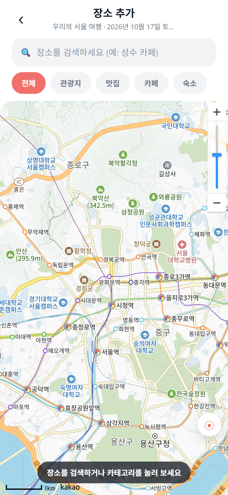
UI 담당 전체 화면 정리 · 적용 기준 · P15-1 장소 검색그날에 담을 장소를 찾고 순서와 시간을 정합니다.
검색창, 카테고리(관광지·맛집·카페·숙소), 지도 표시
같은 날짜에 이미 담은 장소는 다시 담지 않음
날짜 제목(최대 30자), 위·아래 화살표로 순서 변경
방문 시간을 눌러 수정하고 "변경 저장"
적용 기준
docs/AT_THAT_PLACE_전체화면정리.pptx · 870be871c97e8687a2ae7592fcbc48f59875e148 · P15-1_장소_검색_순서_편집_장소_검색.png
v3에서 바뀐 결정
D11 방문 시간: 추가 시 5분 단위 → 시간 없이 추가 후 1분 단위 휠
D13 장소 검색: 대한민국·첫 방문 위치 → 서울특별시 결과·15건·카테고리 2km·서울시청 시작
제품 구현 계약 · 장소 검색과 지도
① 카카오 키워드 검색 15건, 서울특별시 영역·주소가 서울인 결과만(제외 수 표시). 빈 검색어 무시, 늦은 이전 응답은 버린다. ② 카테고리는 검색어를 비우고 지도 중심 반경 2km 거리순 15건. 전체: 검색어 있으면 재검색, 없으면 결과 지움.
③ 지도 시작 서울시청. 이동 후 재검색, ⦿ 누를 때만 위치 권한(실패 ‘위치 권한이 꺼져 있어요. 지도 위치 기준으로 검색할 수 있어요.’/‘현재 위치를 가져오지 못했어요.’). 거리 기준 = 현재 위치 또는 검색 당시 지도 중심, 1km 미만 10m 단위. 핀 → 결과 강조.
④ 결과 시트(지도 절반 높이, 접으면 84px), 관련도순/거리순, 분류 이모지 썸네일, 이미 담김 ‘✓ 스팟에 추가됨’. 결과 없음 ‘서울특별시 안의 검색 결과가 없어요 (서울 밖 n곳 제외)’, 실패 ‘검색에 실패했어요. 잠시 후 다시 시도해 주세요.’
⑤ 상세 패널(이름·분류·📍주소·📅 선택한 날짜) → 그 날 맨 뒤에 시간 없이 추가 → UI08 복귀·‘추가됨’. 같은 날 같은 장소 거부 ‘{이름}은(는) 이미 {날짜} 장소에 담겨 있어요’, 15개 초과 ‘이 날짜에는 장소를 15개까지 추가할 수 있어요’. 직접 등록 → UI11.
제품 상태·API
검색 전 ‘장소를 검색하거나 카테고리를 눌러 보세요’ / 결과 없음 / 공급자 오류 / 지도 로딩 15초 초과·키 오류 / 위치 거절 / 중복 / 15개 도달
placesSearch, visitCreate
S03 · 장소 검색과 지도
프로토타입 실행 캡처(참고) · S03 @ 870be87 · 웹 · UI10
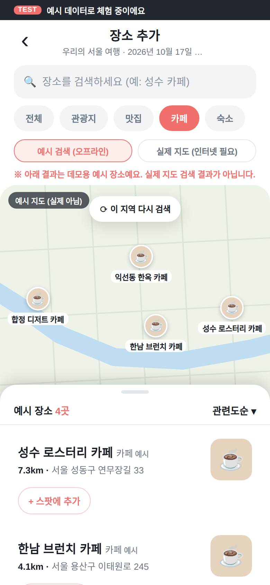
프로토타입 실행 캡처(참고) · S03 @ 870be87 · 웹검색창·카테고리·예시 지도·결과 시트. 현재 캡처는 오프라인 예시 검색이다.
검색 결과와 핀을 연동하고 관련도순/거리순을 제공한다.
추가 성공 시 S02로 복귀하고 마지막 순서에 추가·추가됨 표시. 실제 카카오 연동은 별도 검수.
원본과 실행 경로
src/prototype/screens/PlaceSearchScreen.tsx
장소 추가 → 카페 카테고리
/prototype/place-search?tripId=trip1&itineraryId=itin-seoul-1&dayId=day-1
S03-detail · 장소 상세와 추가
브랜치 실행 캡처 · S03-detail @ 870be87 · 웹 · UI10
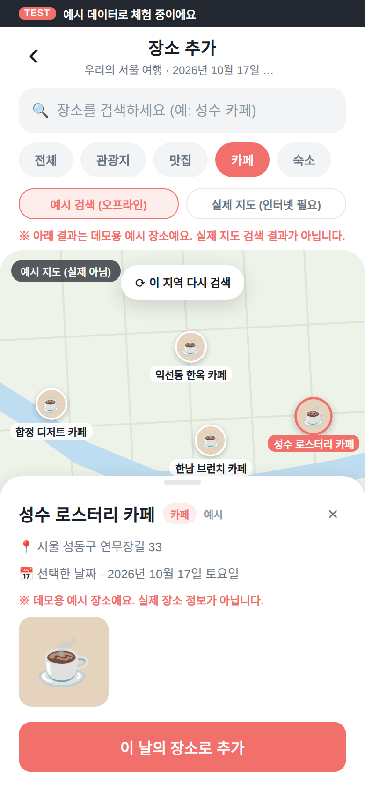
브랜치 실행 캡처 · S03-detail @ 870be87 · 웹선택 날짜·주소를 확인하고 이 날의 장소로 추가한다. 선택만으로는 저장하지 않는다.
원본과 실행 경로
src/prototype/components/PlaceDetailPanel.tsx
카페 결과 → 성수 로스터리 카페
/prototype/place-search?tripId=trip1&itineraryId=itin-seoul-1&dayId=day-1
UI11 · 장소 직접 등록
명세 기반 설계안 · 기존 화면 유지 · F09
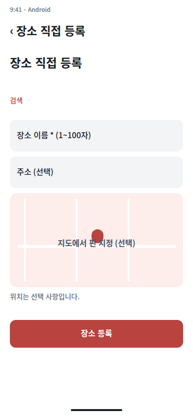
명세 기반 설계안 · 기존 화면 유지기존 유지(프로토타입 화면 없음). UI10 결과 시트 하단 ‘검색에 없나요? 직접 등록’에서 연다. ① 이름 1~100, 주소 200. 좌표 없는 등록 허용, 마커·거리를 만들지 않는다.
② 좌표 소수점 6자리. 같은 날짜에 이름·주소·좌표가 모두 같으면 중복.
③ 그 날 맨 뒤에 시간 없이 추가, 15개 초과 거부, 지도 공급자에 게시하지 않는다.
상태·API
이름 없음 / 좌표 없음 / 중복 / 15개 도달 / 검사 거부
visitCreate
편집 가능한 SVG 원본
UI12 · 장소 검색·순서 편집
UI 담당 전체 화면 정리 · 적용 기준 · P15-2 순서 편집 · UI12
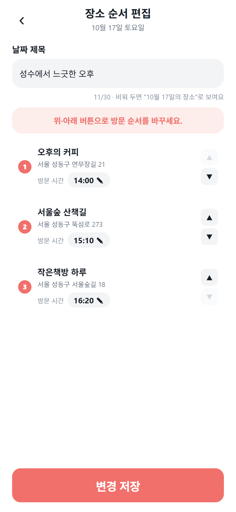
UI 담당 전체 화면 정리 · 적용 기준 · P15-2 순서 편집그날에 담을 장소를 찾고 순서와 시간을 정합니다.
검색창, 카테고리(관광지·맛집·카페·숙소), 지도 표시
같은 날짜에 이미 담은 장소는 다시 담지 않음
날짜 제목(최대 30자), 위·아래 화살표로 순서 변경
방문 시간을 눌러 수정하고 "변경 저장"
적용 기준
docs/AT_THAT_PLACE_전체화면정리.pptx · 870be871c97e8687a2ae7592fcbc48f59875e148 · P15-2_장소_검색_순서_편집_순서_편집.png
v3에서 바뀐 결정
D08 일정 변경: 일정 기간 변경·취소·빈 일정 삭제 → 하루 단위 제목·날짜 변경·취소·삭제(UI38), 전체 기간 변경 화면 없음
D10 날짜별 장소: 한 일정의 날짜 → 모임 이름·모임 전체 활성 날짜 탭
D11 방문 시간: 추가 시 5분 단위 → 시간 없이 추가 후 1분 단위 휠
D12 순서 편집: 끌기·시각순 정렬·3택 이탈 → ▲▼·날짜 제목 30·방문 시간·변경 저장
제품 구현 계약 · 장소 순서 편집
① 변경 입력 최대 30자, 비우면 기본 제목. UI38에서 저장한 기존 31~100자 제목은 원문 유지하며 순서·시간만 저장해도 자르지 않는다(Q15). 날짜 공통 메모 없음.
② 방문 시간 창: 오전/오후·1~12시·00~59분 휠(1분 단위), 처음 값 현재 시간 또는 오후 12시, ‘시간 미정으로 두기’·취소·확인. 편집 사본에만 반영. 시간 변경으로 순서를 바꾸지 않는다.
▲▼(맨 위 ▲·맨 아래 ▼ 비활성). ③ 빈 방문 삭제(기존 유지, 기록·진행 업로드 있으면 잠금). 장소가 없으면 ‘아직 담은 장소가 없어요. 장소를 담으면 여기서 순서와 시간을 바꿀 수 있어요.’
④ 순서·시간·제목을 버전과 함께 한 번에 저장 후 UI08. 동시 수정 충돌·실패 시 입력 유지. 변경 후 뒤로가기는 ‘저장하지 않고 나갈까요?’.
제품 상태·API
빈 날 / 저장 중 / 버전 충돌 / 누락·중복·다른 날짜 혼입 거부 / 미저장 이탈 / 취소된 날·만료 비활성
planUpdate, visitDelete
S05 · 방문 계획 편집
프로토타입 실행 캡처(참고) · S05 @ 870be87 · 웹 · UI12
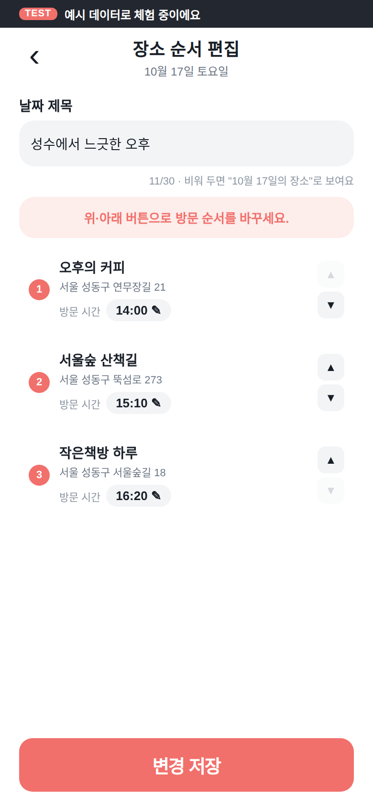
프로토타입 실행 캡처(참고) · S05 @ 870be87 · 웹날짜 제목 30자·위/아래 순서 이동·방문 시간·변경 저장.
드래그 없이 ▲▼로 이동한다. 시간 변경으로 순서를 자동 정렬하지 않는다.
날짜 공통 메모 입력은 최신 화면에서 제거됐다. 제품은 F10의 버전·입력 보존·5분 시각 규칙을 따른다.
원본과 실행 경로
src/prototype/screens/PlaceOrderEditScreen.tsx
S02 → 편집
/prototype/place-order?tripId=trip1&itineraryId=itin-seoul-1&dayId=day-1
M1 · 방문 시간 수정
브랜치 실행 캡처 · M1 @ 870be87 · 웹 · UI12
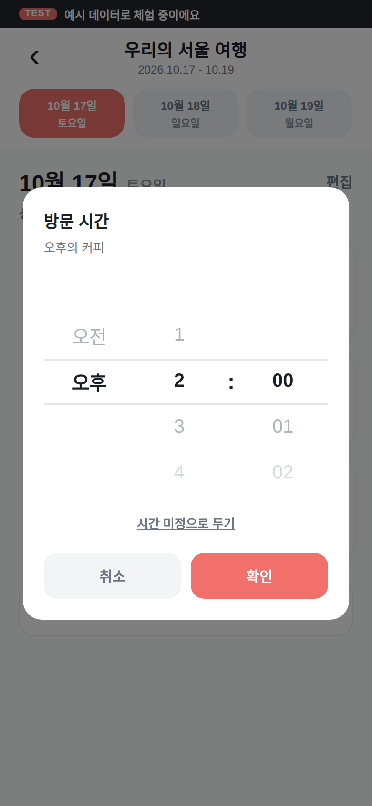
브랜치 실행 캡처 · M1 @ 870be87 · 웹오전/오후·시·분 휠. 분은 1분 단위이며 시간 미정·취소·확인 제공.
기존 설계의 5분 단위 입력과 차이가 있다. 저장 형식은 HH:mm이다.
원본과 실행 경로
src/prototype/components/TimeEditModal.tsx
S02 → 방문 시간 수정
/prototype/itinerary-day?tripId=trip1&itineraryId=itin-seoul-1&dayId=day-1
S05-empty · 빈 날짜 편집
브랜치 실행 캡처 · S05-empty @ 870be87 · 웹 · UI12
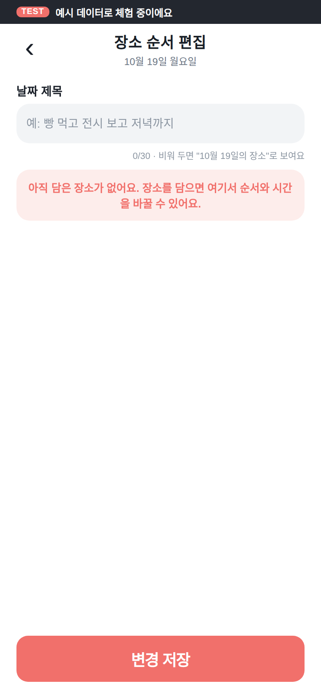
브랜치 실행 캡처 · S05-empty @ 870be87 · 웹장소 행 없이 날짜 제목을 수정할 수 있다. 최신 UI에서 메모 입력이 제거됐다.
원본과 실행 경로
src/prototype/screens/PlaceOrderEditScreen.tsx
빈 날짜 → 편집
/prototype/place-order?tripId=trip1&itineraryId=itin-seoul-1&dayId=day-3
UI13 · 사진별 보기
UI 담당 전체 화면 정리 · 적용 기준 · P16-1 사진별 보기 · UI13
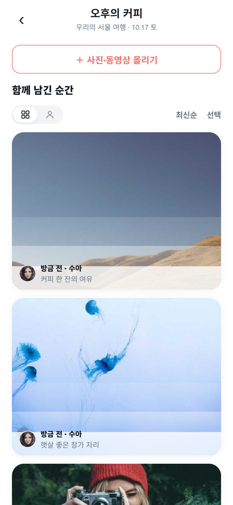
UI 담당 전체 화면 정리 · 적용 기준 · P16-1 사진별 보기장소에 남긴 사진·동영상을 카드로 봅니다.
카드: 작성자, 시간, 설명 (날짜는 위에 있어 시간만)
동영상은 ▶ 표시와 길이
"최신순/오래된순" 정렬, "선택"으로 여러 장 고르기
"N개 다운받기" 버튼
참고: 기기 갤러리에 저장하는 기능은 아직 연결 전이라 안내만 표시됩니다.
적용 기준
docs/AT_THAT_PLACE_전체화면정리.pptx · 870be871c97e8687a2ae7592fcbc48f59875e148 · P16-1_사진별_보기_사진별_보기.png
v3에서 바뀐 결정
D14 업로드: 한 제출 1~120·파일별 정보 입력 → 장소에서 한 번 10개·중복 제외·입력 없음
D16 기록 보기: 시간순·사람별 묶음 → 사진별·사람별·최신순(기본)/오래된순
D17 선택 저장: 길게 눌러·휴대폰 저장 → 선택 → n개 다운받기·사람별 ⋯ → 사진 다운받기
D18 감상: 핀치 확대 → 1~4배 단계·두 번 탭·동영상 자동 재생
제품 구현 계약 · 장소 기록 · 사진별
① 업로드 시트(UI14). 취소된 날·만료 일정이면 비활성과 사유. 진행 중 전송이 있으면 상단 진행 띠 → UI17.
② 섹션 제목 ‘함께 남긴 순간’(동영상 없으면 ‘함께 남긴 사진’)+사진/동영상 수. 정렬 최신순(기본)/오래된순: 게시 묶음 업로드 완료 시각(연도 포함), 묶음 안은 고른 순서. 기록은 방문(일정·날짜·장소) 단위.
③ 파일 1개 = 카드 1장, 4:3 cover, 동영상 ▶·길이, 아래 띠 작성자 아바타·HH:mm · 이름·설명 1줄. 누르면 UI18. 이미지 실패 ‘🖼️ 이미지를 불러오지 못했어요’.
④ 선택 모드(‘선택’ 또는 길게 누르기): 체크·전체 선택/전체 해제·취소, 하단 ‘{n}개 다운받기’(0개 ‘사진을 선택하세요’), 최대 120개 → UI21. 본인 파일만 선택되면 정보 수정·삭제(UI20·F18) 제공. 빈 상태 ‘아직 이곳에 남긴 사진·동영상이 없어요.\n스팟원이 올리면 여기에 모여요.’
Q16 추가 설계·PM 확인 대기: 묶음 첫 파일 완료 시각을 임시 정렬 기준으로 사용. 후속 완료 시 재배치 여부를 확인한다.
제품 상태·API
로딩·실패·다시 시도 / 기록 없음 / 정렬 전환 / 선택 모드 / 다운받기 진행 / 업로드 진행 띠 / 취소된 날·만료
mediaList, mediaStream, avatarStream, exportCreate, uploadGet
P16-2 · 사진별 보기 · 선택해서 다운받기
UI 담당 전체 화면 정리 · 적용 기준 · P16-2 선택해서 다운받기 · UI13
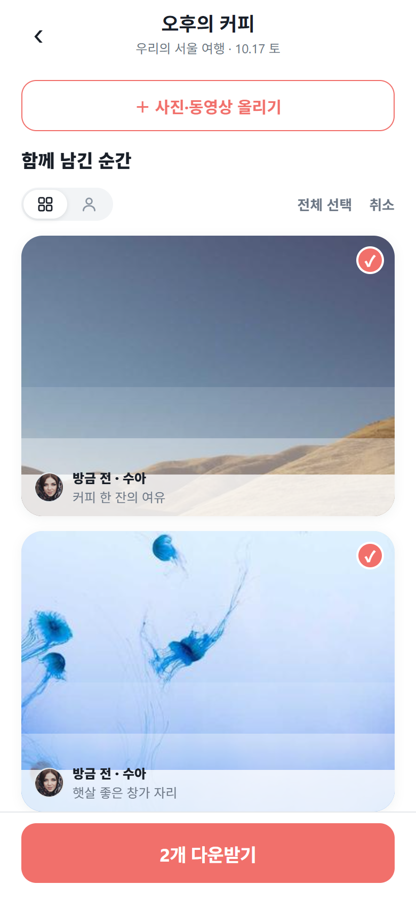
UI 담당 전체 화면 정리 · 적용 기준 · P16-2 선택해서 다운받기장소에 남긴 사진·동영상을 카드로 봅니다.
카드: 작성자, 시간, 설명 (날짜는 위에 있어 시간만)
동영상은 ▶ 표시와 길이
"최신순/오래된순" 정렬, "선택"으로 여러 장 고르기
"N개 다운받기" 버튼
참고: 기기 갤러리에 저장하는 기능은 아직 연결 전이라 안내만 표시됩니다.
적용 기준
docs/AT_THAT_PLACE_전체화면정리.pptx · 870be871c97e8687a2ae7592fcbc48f59875e148 · P16-2_사진별_보기_선택해서_다운받기.png
S04 · 장소별 기록 · 사진별
프로토타입 실행 캡처(참고) · S04 @ 870be87 · 웹 · UI13
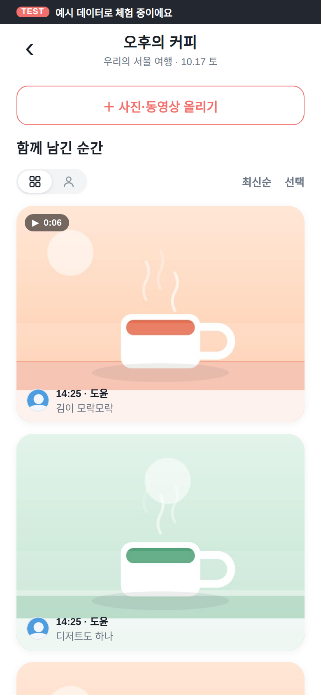
프로토타입 실행 캡처(참고) · S04 @ 870be87 · 웹장소 헤더·올리기·최신/오래된순·보기 아이콘·선택 버튼. 사진/영상 집계는 제품에서 유지한다.
파일 하나당 4:3 카드 하나. 작성자·시각·설명·영상 길이를 표시한다.
데모 최신순은 게시물 시각 기준이며 제품의 촬영 시각 기준 오름차순과 차이가 있다.
원본과 실행 경로
src/prototype/screens/PlaceRecordsScreen.tsx
S02 → 오후의 커피
/prototype/place-records?tripId=trip1&itineraryId=itin-seoul-1&dayId=day-1&placeId=demo-cafe
S04-select · 기록 선택과 저장
브랜치 실행 캡처 · S04-select @ 870be87 · 웹 · UI13
브랜치 실행 캡처 · S04-select @ 870be87 · 웹체크 표시·전체 선택·선택 수·하단 저장 버튼. 제품은 길게 선택·최대120개·파일별 저장 결과도 제공한다.
데모 다운로드 처리기는 미연결이다. 저장 완료 화면으로 해석하지 않는다.
원본과 실행 경로
src/prototype/screens/PlaceRecordsScreen.tsx
S04 → 선택 → 사진 선택
/prototype/place-records?tripId=trip1&itineraryId=itin-seoul-1&dayId=day-1&placeId=demo-cafe
S04-empty · 기록 없는 장소
브랜치 실행 캡처 · S04-empty @ 870be87 · 웹 · UI13
브랜치 실행 캡처 · S04-empty @ 870be87 · 웹기록 없음 안내와 올리기 버튼을 표시한다.
원본과 실행 경로
src/prototype/screens/PlaceRecordsScreen.tsx
S02 → 작은책방 하루
/prototype/place-records?tripId=trip1&itineraryId=itin-seoul-1&dayId=day-1&placeId=demo-books
UI14 · 사람별 보기·올리기
UI 담당 전체 화면 정리 · 적용 기준 · P17-3 사진·동영상 올리기 · UI14
UI 담당 전체 화면 정리 · 적용 기준 · P17-3 사진·동영상 올리기아이콘 토글로 사람별로 모아 보고, 새로 올립니다.
사람마다 올린 사진·동영상을 격자로 묶어서 보기
"+N"으로 펼치고 "접기"
⋯ → "사진 다운받기"
올리기 창: 최대 10개, 중복 파일 제외
참고: 다운로드와 실제 업로드는 아직 연결 전입니다.
적용 기준
docs/AT_THAT_PLACE_전체화면정리.pptx · 870be871c97e8687a2ae7592fcbc48f59875e148 · P17-3_사람별_보기_올리기_사진_동영상_올리기.png
v3에서 바뀐 결정
D14 업로드: 한 제출 1~120·파일별 정보 입력 → 장소에서 한 번 10개·중복 제외·입력 없음
D15 촬영: 앱 내 카메라·1~5초 → 기기 카메라 사진·동영상
제품 구현 계약 · 사진·동영상 올리기
① 담은 항목 76×76, 가로 스크롤, ✕(빼기). 동영상은 ▶와 길이 m:ss. ＋는 담은 수 10개 미만일 때 → ⑤ 선택 시트. 시트를 닫아도 화면을 떠나기 전까지 유지.
② 한 번에 최대 10개, 넘치면 ‘사진과 동영상은 최대 10개까지 올릴 수 있어요’. 같은 파일(기기 자산 ID, 없으면 파일 이름·크기)은 이미 담겼거나 같은 선택 안에서 겹치면 한 번만 담고 ‘이미 추가한 파일은 다시 담지 않았어요’.
③ P11 작성자별 장소당 사진 5·영상 2 남은 수(완료+진행 합산, Q3). ④ 1개 이상일 때. 방문=이 장소, 기록일=그 방문 날짜, 설명 입력 없음(Q6). 서버가 파일별로 한도·규격 검사 후 넘는 파일만 거부 → UI17 추적, 시트 비우고 닫기.
⑤ 보관함: 시스템 사진 선택기(사진만/동영상만) 다중, 남은 칸 수까지, 고른 순서 유지. 촬영: 카메라 권한(거부 ‘카메라 권한이 필요해요’)·후면 기기 카메라. 검증 사진 50MB·동영상 60초·200MB. 선택기 오류 ‘불러오지 못했어요’.
부분 접수는 접수된 후보만 제거하고 거부 후보·사유를 유지. 응답 유실은 같은 멱등 키로 확인, 모두 접수됐을 때만 시트를 비운다.
제품 상태·API
빈 시트(업로드 비활성) / 10개 도달 / 중복 제외 / 권한 거절 / 파일 검증 실패 / 한도 초과 파일 / 취소된 날·만료 진입 불가
uploadPrepare, uploadLimits
M2 · 기록 추가 시트
프로토타입 실행 캡처(참고) · M2 @ 870be87 · 웹 · UI14
프로토타입 실행 캡처(참고) · M2 @ 870be87 · 웹빈 선택 목록·추가 타일·업로드하기. 선택 0개이면 제출 비활성.
화면의 최대 10개는 데모 값이다. 제품 계약의 방문별 사진5/영상2·다중선택120과 구분한다.
실제 업로드는 팀원 연결 지점이며 서버 저장 완료를 뜻하지 않는다.
원본과 실행 경로
src/prototype/screens/PlaceRecordsScreen.tsx
S04 → 사진·동영상 올리기
/prototype/place-records?tripId=trip1&itineraryId=itin-seoul-1&dayId=day-1&placeId=demo-cafe
M3 · 촬영과 앨범 선택
브랜치 실행 캡처 · M3 @ 870be87 · 웹 · UI14
브랜치 실행 캡처 · M3 @ 870be87 · 웹사진 촬영·동영상 촬영·앨범 선택 연결. OS 선택기 자체는 이 캡처에 포함하지 않는다.
원본과 실행 경로
src/prototype/components/MediaPickerSheet.tsx
M2 → 추가 타일
/prototype/place-records?tripId=trip1&itineraryId=itin-seoul-1&dayId=day-1&placeId=demo-cafe
UI15 · 사진·동영상 촬영
명세 기반 설계안 · 기존 화면 유지 · F12
명세 기반 설계안 · 기존 화면 유지① UI14 선택 시트의 사진 촬영·동영상 촬영에서 기기 카메라를 연다(앱 내 길이 선택 없음, D15). 앱 매니페스트에 카메라·마이크 권한 선언.
② 동영상 촬영 결과도 60초·200MB 검증(Q7). 초과는 담지 않고 사유 안내.
③ 사용하면 UI14 시트에 담긴다. 취소는 시트에 영향 없음. 앱 전환·전화 뒤에도 유효한 결과만 담는다.
상태·API
카메라 거절 / 촬영 취소 / 검증 실패 / 저장공간 부족
uploadPrepare
편집 가능한 SVG 원본
UI16 · 기록 선택
명세 기반 설계안 · 기존 화면 유지 · F17 / F18 / F19
명세 기반 설계안 · 기존 화면 유지① UI13 사진별·일정 전체 기록·UI22에서 ‘선택’ 또는 길게 누르기로 들어간다. 카드 누름 = 체크 토글(확대 보기 안 열림). 전체 선택은 불러온 항목만.
② 최대 120개. 보기 전환·화면 이탈 시 선택 종료. ③ UI21 다운로드(동영상은 동영상 파일).
④ 기존 유지: 선택이 모두 본인 파일이면 정보 수정(UI20)·삭제(F18). 타인 파일이 섞이면 비활성과 이유.
상태·API
0개(다운받기 비활성 ‘사진을 선택하세요’) / 120개 도달 / 타인 혼합 / 선택 중 삭제·만료
exportCreate, metadataPatch, mediaDelete
편집 가능한 SVG 원본
UI17 · 파일 전송 상태
명세 기반 설계안 · 기존 화면 유지 · F15 / F20 / F26
명세 기반 설계안 · 기존 화면 유지기존 유지. UI13 진행 띠에서 연다. ① 완료 파일만 목록·개수에 반영. ② 전송 100%는 완료가 아니다. 검토 대기는 비공개.
③ 파일별 1·2·4초 최대 3회 자동 재시도, 오프라인 대기는 횟수 미소모, 동시 3개.
하루·일정 취소 전에 접수한 같은 파일은 완료·재시도 가능. 권한 소멸·종료·만료·사용자 취소가 우선한다.
상태·API
준비·대기 / 전송 / 서버 확인 / 검토 / 완료 / 실패 / 취소 / 결과 확인 필요
uploadGet, uploadRetry, uploadCancel, uploadCommit, uploadHead, uploadChunk
편집 가능한 SVG 원본
UI18 · 확대 보기와 동영상 재생
브랜치 실행 캡처 · V1-photo @ 870be87 · 웹 · UI18
브랜치 실행 캡처 · V1-photo @ 870be87 · 웹전체 화면 사진·확대/축소·닫기. 버튼과 두 번 탭 확대를 제공한다.
저장·다중 선택·신고/차단 등 제품 기능은 이 데모 뷰어에 구현되어 있지 않다.
원본과 실행 경로
src/demo/MediaViewerModal.tsx
S04 → 도윤 사진
/prototype/place-records?tripId=trip1&itineraryId=itin-seoul-1&dayId=day-1&placeId=demo-cafe
제품 구현 계약 · 확대 보기와 동영상 재생
① 전체 화면, ✕·뒤로가기로 닫힘. 닫으면 재생 중지·목록 위치 유지. 이전/다음 넘기기 없음.
② 사진: 화면 높이 72% 영역에 맞춤, 두 번 탭 1↔2배(확대 중이면 1배), ③ －/＋ 단계(끝 단계 비활성), 확대 시 가운데부터 상하좌우 이동. 동영상: 열자마자 재생·기본 컨트롤·반복 없음, 실패 ‘동영상을 재생하지 못했어요’+다시 시도.
④ 작성자·날짜 시각·설명. ⑤ 기존 유지: 저장(UI21), 본인 정보 수정(UI20)·삭제, 타인 신고·차단(UI31). 방장도 타인 파일 수정·삭제 불가.
제품 상태·API
불러오는 중 / 재생 실패 / 만료·삭제·권한 상실 / 본인 보존 경로(저장 숨김)
mediaStream, avatarStream, metadataPatch, mediaDelete, reportCreate, exportCreate
V1-video · 동영상 재생 보기
브랜치 실행 캡처 · V1-video @ 870be87 · 웹 · UI18
브랜치 실행 캡처 · V1-video @ 870be87 · 웹번들 예시 동영상과 재생 컨트롤. 웹 렌더링 캡처이며 Android 재생 검수 결과와 구분한다.
원본과 실행 경로
src/demo/MediaViewerModal.tsx
S04 → 도윤 동영상
/prototype/place-records?tripId=trip1&itineraryId=itin-seoul-1&dayId=day-1&placeId=demo-cafe
UI20 · 본인 기록 정보 수정
명세 기반 설계안 · 기존 화면 유지 · F17
명세 기반 설계안 · 기존 화면 유지기존 유지. 업로드 시트에 설명 입력이 없으므로 설명은 여기서 입력한다(Q6, 1000자). ② 필드별 적용/유지, 설명 비우기·방문 해제는 명시적 동작.
③ 본인·같은 일정·120개·버전·옮겨 갈 방문의 사진5/영상2 검증. 설명 검사 중에는 기존 공개 내용 유지.
④ 하나라도 오류면 전체 미적용, 대상별 이유·입력 유지.
상태·API
필드 미선택 / 다른 일정 혼입 / 한도 초과 / 검사 중·거부 / 버전 충돌
metadataPatch
편집 가능한 SVG 원본
UI21 · 다운로드(휴대폰 저장)
명세 기반 설계안 · 기존 화면 유지 · F19 / F20
명세 기반 설계안 · 기존 화면 유지UI16 ‘{n}개 다운받기’, UI09 ‘⋯ → 사진 다운받기’, UI18 저장에서 시작. ① 위치 제거 저장본, 동영상은 동영상 파일(프로토타입은 대표 이미지를 넘김).
② 준비·내려받기·기기 쓰기 구분, 성공 ‘{n}개를 저장했어요’, 부분 실패는 성공/실패 수·실패만 재시도, 실패 ‘저장하지 못했어요’. 임시 파일은 기기 쓰기 후 정리.
③ purpose=save만 허용.
상태·API
준비 / 다운로드 / 기기 쓰기 / 부분 실패 / 공간 부족 / 저장 권한 거절 / 권한 변경
exportCreate, exportGet, exportFile
편집 가능한 SVG 원본
UI22 · 내가 올린 기록
명세 기반 설계안 · 기존 화면 유지 · F18 / F21
명세 기반 설계안 · 기존 화면 유지기존 유지. 내 모임 하단 탭 ‘내 기록’에서 연다(프로토타입은 토스트). ① 활성 참여·초대를 요구하지 않는다.
② 참여 종료 모임의 본인 파일은 조회·삭제만. 타인 파일·공동 계획·참여자는 보이지 않는다.
③ 최대 120개·여러 모임 혼합. 파일별 성공·실패·이미 삭제 결과. 서버 삭제는 기기 앨범 삭제가 아님을 안내.
상태·API
참여 중·종료 / 만료 30일 카드 / 파일별 삭제 실패 / 이미 삭제
mineList, mediaDelete
편집 가능한 SVG 원본
UI23 · 초대·관리
UI 담당 전체 화면 정리 · 적용 기준 · P11-1 초대·관리 · UI23
UI 담당 전체 화면 정리 · 적용 기준 · P11-1 초대·관리모임 사진을 바꾸고 초대 코드를 발급·공유합니다.
맨 위 "모임 사진"에서 대표 사진 변경 (방장만)
초대 코드는 7일 동안, 확인 50회까지 유효
"링크 복사", "공유하기", "이 초대 취소하기"
이전 초대는 사용 가능·소진·만료·취소 상태로 표시
"새 초대 발급하기"로 새 코드 생성
참고: 모임 사진은 앱을 다시 열면 처음 예시 사진으로 돌아갑니다.
적용 기준
docs/AT_THAT_PLACE_전체화면정리.pptx · 870be871c97e8687a2ae7592fcbc48f59875e148 · P11-1_초대_관리_초대_관리.png
v3에서 바뀐 결정
D05 모임 사진: 모임 정보 변경·16:9 → 초대·관리 맨 위 모임 사진(방장)·4:3
D19 초대 코드: 길이 미확정 → 8자·0/O/1/I 제외
D20 초대 화면: 사용 가능·이전 목록 → 현재 카드 1개+이전 초대·코드 탭 복사·공유하기
제품 구현 계약 · 초대·관리
① 방장만 보이는 모임 사진 행: 사진 보관함 1장, 4:3 자르기, 위치 제거·검사 후 반영, ‘모임 사진을 바꿨어요’. 기본 이미지로 되돌리기 추가(기존 유지). 실패 ‘사진 용량이 너무 커요. 더 작은 사진을 골라 보세요.’ 등.
② 현재 카드 = 사용 가능한 초대 중 가장 최근 1개. 코드 8자(0·O·1·I 제외), 탭 복사 ‘코드를 복사했어요’, 168시간, 성공한 확인 50회 소진, 10회 이하 남으면 ‘· n회 남음’. 정원이 차면 ‘지금은 정원이 다 찼어요. 자리가 나야 새로 참여할 수 있어요.’
③ 링크 복사 ‘링크를 복사했어요’, 공유하기 = OS 공유 시트(메시지: [At that place] ‘{모임}’에 초대해요./일정/링크·코드/만료 시각), 실패 ‘공유할 수 없어요. 링크 복사를 이용해 주세요’. 취소 확인 ‘이 초대를 취소할까요?’/‘이 링크와 코드로는 더 이상 참여할 수 없어요. 이미 참여한 사람은 그대로예요.’
④ 이전 초대(발급 최신순): 상태 사용 가능/소진 n/50/만료/취소, 사용 가능 행 공유·취소. ⑤ 요청 키로 발급, 기존 초대 유지 ‘새 초대를 만들었어요’. 빈 상태 ‘지금 사용할 수 있는 초대가 없어요’. 1분마다 만료 반영, 충돌 시 ‘초대 상태가 바뀌어 다시 불러왔어요’.
제품 상태·API
불러오는 중 / 첫 조회 실패 / 재조회 실패 띠 / 빈 상태 / 발급 실패·종료 모임 / 정원 10명 / 취소 충돌 / 모임 사진 검사 중
invitesList, inviteCreate, inviteRevoke, groupUpdate, coverPrepare, uploadHead, uploadChunk
P11-2 · 초대·관리 · 이전 초대 목록
UI 담당 전체 화면 정리 · 적용 기준 · P11-2 이전 초대 목록 · UI23
UI 담당 전체 화면 정리 · 적용 기준 · P11-2 이전 초대 목록모임 사진을 바꾸고 초대 코드를 발급·공유합니다.
맨 위 "모임 사진"에서 대표 사진 변경 (방장만)
초대 코드는 7일 동안, 확인 50회까지 유효
"링크 복사", "공유하기", "이 초대 취소하기"
이전 초대는 사용 가능·소진·만료·취소 상태로 표시
"새 초대 발급하기"로 새 코드 생성
참고: 모임 사진은 앱을 다시 열면 처음 예시 사진으로 돌아갑니다.
적용 기준
docs/AT_THAT_PLACE_전체화면정리.pptx · 870be871c97e8687a2ae7592fcbc48f59875e148 · P11-2_초대_관리_이전_초대_목록.png
INVITES · 초대 발급과 관리
프로토타입 실행 캡처(참고) · INVITES @ 870be87 · 웹 · UI23
프로토타입 실행 캡처(참고) · INVITES @ 870be87 · 웹모든 현재 참여자가 초대 관리. 방장에게만 모임 사진 변경이 추가됐다.
모임 사진은 4:3 선택 후 로컬 상태에 반영된다. 제품 UI25의 16:9·검사·업로드 완료 처리는 별도 계약이다(P9). OS 공유·실제 외부 전송 검수 아님.
원본과 실행 경로
src/prototype/screens/InviteManageScreen.tsx
모임 달력 → 초대·관리
/prototype/invites?groupId=g-walk
UI24 · 초대 확인·참여
UI 담당 전체 화면 정리 · 적용 기준 · P12-1 정상 초대 · UI24
UI 담당 전체 화면 정리 · 적용 기준 · P12-1 정상 초대초대 코드로 모임과 일정 요약을 확인하고 참여합니다.
코드 8자를 입력하고 "확인"
모임 이름, 일정 요약, 보관 안내를 미리 확인
취소·만료된 코드는 안내만 표시
정원 10명이 차면 참여할 수 없음
내보내진 모임에는 다시 참여할 수 없음
적용 기준
docs/AT_THAT_PLACE_전체화면정리.pptx · 870be871c97e8687a2ae7592fcbc48f59875e148 · P12-1_초대_확인_참여_정상_초대.png
v3에서 바뀐 결정
D01 로그인: 카카오만(Google 보류) → 카카오·Google 두 수단, 두 버튼 잠금·누른 버튼만 진행
D19 초대 코드: 길이 미확정 → 8자·0/O/1/I 제외
D20 초대 화면: 사용 가능·이전 목록 → 현재 카드 1개+이전 초대·코드 탭 복사·공유하기
제품 구현 계약 · 초대 확인과 참여
① 입력마다 링크에서 코드 추출·대문자·영숫자만·8자. 8자면 ‘✓ 코드 형식이 맞아요’, 확인 버튼·키보드 검색키로 확인(성공한 확인마다 50회 중 1회). 링크로 열면 자동 확인. 입력을 바꾸면 미리보기 해제.
② 로그인 전에도 모임 이름·대표 일정·D-day만 공개(‘사진·참여자 목록·장소 계획은 참여한 사람에게만 보여요.’). 일정 없으면 ‘아직 일정이 없어요’.
③ 로그인 전 ‘로그인하고 참여 계속하기 →’(보류 초대 저장), 가입 후 ‘모임 참여하기 →’. 서버 재검사 후 ‘{모임}’에 참여했어요/이미 참여 중인 모임이에요 → UI05 교체.
거절: 코드 불일치 / 기한(7일) / 확인 횟수(50회) / 취소 / 종료 모임 / 정원(10명) / 재참여 차단 / 100개 한도 / 오프라인 / 서버 오류. 최종 거절은 버튼이 ‘닫기’, 보류 초대 삭제.
제품 상태·API
코드 입력 중 / 형식 확인 / 확인 중 / 미리보기 / 로그인 전·후 / 최종 거절 / 재시도 가능 거절 / 이미 참여
invitePreview, inviteJoin
P12-2 · 초대 확인·참여 · 취소된 초대
UI 담당 전체 화면 정리 · 적용 기준 · P12-2 취소된 초대 · UI24
UI 담당 전체 화면 정리 · 적용 기준 · P12-2 취소된 초대초대 코드로 모임과 일정 요약을 확인하고 참여합니다.
코드 8자를 입력하고 "확인"
모임 이름, 일정 요약, 보관 안내를 미리 확인
취소·만료된 코드는 안내만 표시
정원 10명이 차면 참여할 수 없음
내보내진 모임에는 다시 참여할 수 없음
적용 기준
docs/AT_THAT_PLACE_전체화면정리.pptx · 870be871c97e8687a2ae7592fcbc48f59875e148 · P12-2_초대_확인_참여_취소된_초대.png
P12-3 · 초대 확인·참여 · 다른 모임 예시 1
UI 담당 전체 화면 정리 · 적용 기준 · P12-3 다른 모임 예시 1 · UI24
UI 담당 전체 화면 정리 · 적용 기준 · P12-3 다른 모임 예시 1초대 코드로 모임과 일정 요약을 확인하고 참여합니다.
코드 8자를 입력하고 "확인"
모임 이름, 일정 요약, 보관 안내를 미리 확인
취소·만료된 코드는 안내만 표시
정원 10명이 차면 참여할 수 없음
내보내진 모임에는 다시 참여할 수 없음
적용 기준
docs/AT_THAT_PLACE_전체화면정리.pptx · 870be871c97e8687a2ae7592fcbc48f59875e148 · P12-3_초대_확인_참여_다른_모임_예시_1.png
P12-4 · 초대 확인·참여 · 다른 모임 예시 2
UI 담당 전체 화면 정리 · 적용 기준 · P12-4 다른 모임 예시 2 · UI24
UI 담당 전체 화면 정리 · 적용 기준 · P12-4 다른 모임 예시 2초대 코드로 모임과 일정 요약을 확인하고 참여합니다.
코드 8자를 입력하고 "확인"
모임 이름, 일정 요약, 보관 안내를 미리 확인
취소·만료된 코드는 안내만 표시
정원 10명이 차면 참여할 수 없음
내보내진 모임에는 다시 참여할 수 없음
적용 기준
docs/AT_THAT_PLACE_전체화면정리.pptx · 870be871c97e8687a2ae7592fcbc48f59875e148 · P12-4_초대_확인_참여_다른_모임_예시_2.png
INVITE-JOIN · 초대 확인과 참여
프로토타입 실행 캡처(참고) · INVITE-JOIN @ 870be87 · 웹 · UI24
프로토타입 실행 캡처(참고) · INVITE-JOIN @ 870be87 · 웹미리보기 후 명시적 참여·기존 참여자 이동. 코드8자는 기술안(A18, P8). 실제 앱 링크·정원 경쟁·확인 횟수 검수 아님.
원본과 실행 경로
src/prototype/screens/InviteJoinScreen.tsx
예시 초대 코드로 진입
/prototype/invite?code=Q7KM2P8R
UI25 · 모임 이름 변경
명세 기반 설계안 · 기존 화면 유지 · F04
명세 기반 설계안 · 기존 화면 유지기존 유지(프로토타입 화면 없음). 모임 달력 머리의 방장 메뉴에서 연다. ① 1~50, 공개 전 검사, 버전 확인.
② 모임 사진 변경은 UI23과 같은 흐름(4:3). 기본 이미지로 되돌리면 이름 첫 글자 썸네일.
취소·검사 실패·동시 충돌 시 기존 정보와 입력을 유지한다.
상태·API
검사 중 / 거부 / 버전 충돌 / 일반 참여자 거부
groupUpdate, coverPrepare, uploadHead, uploadChunk
편집 가능한 SVG 원본
UI26 · 함께하는 친구
UI 담당 전체 화면 정리 · 적용 기준 · P13-1 방장 화면 · UI26
UI 담당 전체 화면 정리 · 적용 기준 · P13-1 방장 화면모임 달력 위쪽 인원 표시를 누르면 열립니다.
참여한 사람 목록과 방장·나 표시
방장은 사람마다 ⋯ → "내보내기"
내보낸 사람은 같은 초대로 다시 참여할 수 없음
참여자 화면에는 내보내기가 없음
참고: 카카오톡 초대·초대링크 복사 버튼은 아직 안내만 표시됩니다. 실제 공유는 초대·관리에서 합니다.
적용 기준
docs/AT_THAT_PLACE_전체화면정리.pptx · 870be871c97e8687a2ae7592fcbc48f59875e148 · P13-1_함께하는_친구_방장_화면.png
v3에서 바뀐 결정
D21 참여자: 방장 이전·퇴장 화면 → 함께하는 친구에서 방장 ⋯ → 내보내기
제품 구현 계약 · 함께하는 친구
① 모임 달력 상단 인원 띠에서 연다. 목록: 프로필 사진 또는 이름 첫 글자, 이름 1줄, 방장·나 태그. 소셜 식별값·연락처 비노출.
② 현재 사용 가능한 가장 최근 초대로 카카오 공유/링크 복사, 없으면 새로 발급(Q8). 메시지는 UI23과 같다.
③ 방장에게만 다른 사람 행의 ⋯(‘{이름} 더보기 메뉴’): ‘모임에서 내보낼까요?’/이름/‘내보낸 사람은 같은 초대로 다시 참여할 수 없어요.’/내보내기·취소 → ‘{이름}님을 내보냈어요’. 사용자 ID로 모임 재참여 차단. 방장 넘기기 메뉴 추가(기존 유지).
④ 기존 유지: 방장의 재참여 차단 해제 목록, 모든 참여자의 모임 나가기(UI27), 참여자 신고·차단(UI31).
제품 상태·API
일반 참여자는 ⋯ 없음 / 내보내기 실패 ‘내보내지 못했어요. 잠시 후 다시 시도해 주세요’ / 대상이 이미 나감 / 방장 이전 충돌
membersList, avatarStream, memberRemove, ownerTransfer, reentryUnblock, invitesList, inviteCreate
P13-2 · 함께하는 친구 · 내보내기 확인
UI 담당 전체 화면 정리 · 적용 기준 · P13-2 내보내기 확인 · UI26
UI 담당 전체 화면 정리 · 적용 기준 · P13-2 내보내기 확인모임 달력 위쪽 인원 표시를 누르면 열립니다.
참여한 사람 목록과 방장·나 표시
방장은 사람마다 ⋯ → "내보내기"
내보낸 사람은 같은 초대로 다시 참여할 수 없음
참여자 화면에는 내보내기가 없음
참고: 카카오톡 초대·초대링크 복사 버튼은 아직 안내만 표시됩니다. 실제 공유는 초대·관리에서 합니다.
적용 기준
docs/AT_THAT_PLACE_전체화면정리.pptx · 870be871c97e8687a2ae7592fcbc48f59875e148 · P13-2_함께하는_친구_내보내기_확인.png
P13-3 · 함께하는 친구 · 참여자 화면
UI 담당 전체 화면 정리 · 적용 기준 · P13-3 참여자 화면 · UI26
UI 담당 전체 화면 정리 · 적용 기준 · P13-3 참여자 화면모임 달력 위쪽 인원 표시를 누르면 열립니다.
참여한 사람 목록과 방장·나 표시
방장은 사람마다 ⋯ → "내보내기"
내보낸 사람은 같은 초대로 다시 참여할 수 없음
참여자 화면에는 내보내기가 없음
참고: 카카오톡 초대·초대링크 복사 버튼은 아직 안내만 표시됩니다. 실제 공유는 초대·관리에서 합니다.
적용 기준
docs/AT_THAT_PLACE_전체화면정리.pptx · 870be871c97e8687a2ae7592fcbc48f59875e148 · P13-3_함께하는_친구_참여자_화면.png
MEMBERS-GROUP · 모임 참여자와 역할
프로토타입 실행 캡처(참고) · MEMBERS-GROUP @ 870be87 · 웹 · UI26
프로토타입 실행 캡처(참고) · MEMBERS-GROUP @ 870be87 · 웹방장·나 표시, 방장에게 다른 참여자의 ⋯ 메뉴 제공. 이름 기준 mock은 제품 memberId로 대체.
이 화면의 카카오톡 초대·링크 복사는 여전히 안내만 제공. 실제 예시 공유는 초대·관리에서 제공.
원본과 실행 경로
src/prototype/screens/MembersScreen.tsx
모임 달력 → 함께하는 친구
/prototype/members?groupId=g-walk
MEMBERS · 함께하는 친구
브랜치 실행 캡처 · MEMBERS @ 870be87 · 웹 · UI26
브랜치 실행 캡처 · MEMBERS @ 870be87 · 웹모임 참여자 명단과 초대 버튼. 모든 현재 참여자가 UI23 초대 관리로 연결된다.
방장 표시·이전·퇴장·신고/차단·나가기 기존 경로 유지. 데모 초대 버튼은 안내만 수행한다.
원본과 실행 경로
src/prototype/screens/MembersScreen.tsx
일정 요약 → 참여자 묶음
/prototype/members?tripId=trip1&itineraryId=itin-seoul-1&dayId=day-1
MEMBER-REMOVE · 참여자 내보내기 확인
브랜치 실행 캡처 · MEMBER-REMOVE @ 870be87 · 웹 · UI26
브랜치 실행 캡처 · MEMBER-REMOVE @ 870be87 · 웹참여자 내보내기 기능이며 사진 내보내기가 아니다. 확인 후 예시 명단 갱신.
같은 초대 재참여 불가라는 문구보다 F22의 모임 단위 재참여 차단 범위가 넓다. 서버 재검증 필요.
원본과 실행 경로
src/prototype/screens/MembersScreen.tsx
참여자 ⋯ → 확인
/prototype/members?groupId=g-walk
MEMBER-REMOVED · 참여자 내보내기 결과
브랜치 실행 캡처 · MEMBER-REMOVED @ 870be87 · 웹 · UI26
브랜치 실행 캡처 · MEMBER-REMOVED @ 870be87 · 웹로컬 예시 명단에서 대상 제거 확인. 실제 서버 퇴장·기존 기록 권한·재참여 차단 검수 아님.
원본과 실행 경로
src/prototype/screens/MembersScreen.tsx
확인 → 예시 참여자 명단 갱신
/prototype/members?groupId=g-walk
MEMBERS-READER · 일반 참여자 명단
브랜치 실행 캡처 · MEMBERS-READER @ 870be87 · 웹 · UI26
브랜치 실행 캡처 · MEMBERS-READER @ 870be87 · 웹일반 참여자에게 내보내기 메뉴를 제공하지 않는다.
원본과 실행 경로
src/prototype/screens/MembersScreen.tsx
일반 참여자 역할의 모임 → 함께하는 친구
/prototype/members?groupId=g-campus
UI27 · 모임 나가기와 종료
명세 기반 설계안 · 기존 화면 유지 · F22 / F23
명세 기반 설계안 · 기존 화면 유지기존 유지(프로토타입 화면 없음). UI26 하단 ‘모임 나가기’. ② 다른 참여자가 있으면 방장 이전 먼저.
③ 마지막 1명일 때만 종료, 타인 유효 파일은 기한까지 본인 조회/삭제용 보존, 재개 불가.
④ 새 참여·역할 이전과 직렬화해 재검증.
상태·API
일반 나가기 / 후임 필요 / 마지막 방장 / 동시 참여로 종료 거부
groupLeave, groupClose
편집 가능한 SVG 원본
UI28 · 설정
UI 담당 전체 화면 정리 · 적용 기준 · P19-1 설정 · UI28
UI 담당 전체 화면 정리 · 적용 기준 · P19-1 설정꼭 필요한 항목만 모았습니다.
프로필 및 계정, 초대코드 입력, 위치 서비스
서비스 약관 4종, 로그아웃, 서비스 탈퇴
초대코드를 입력하면 초대 확인·참여 화면으로 이동
로그아웃하면 로그인 화면으로 돌아감
참고: 약관 내용과 서비스 탈퇴는 아직 연결 전입니다.
적용 기준
docs/AT_THAT_PLACE_전체화면정리.pptx · 870be871c97e8687a2ae7592fcbc48f59875e148 · P19-1_설정_설정.png
v3에서 바뀐 결정
D02 가입 동의: 이용약관 체크 1개+개인정보 고지 → 전체 동의+서비스 이용약관·개인정보 수집 및 이용(필수)·마케팅·위치정보(선택), 버전 단위
D03 이름: 표시명 20자 → 가입 표시명 1~20, 닉네임 변경 입력 12(같은 필드, Q2)
D19 초대 코드: 길이 미확정 → 8자·0/O/1/I 제외
D20 초대 화면: 사용 가능·이전 목록 → 현재 카드 1개+이전 초대·코드 탭 복사·공유하기
제품 구현 계약 · 설정
마이페이지 ⚙에서 연다. ① UI37. ② 창 ‘초대코드 입력’(자동 포커스·대문자·최대 12자·‘친구에게 받은 코드를 입력하세요’·참여하기) → UI24.
③ 기기 앱 설정 열기, 실패 ‘기기 설정에서 위치 권한을 바꿔 주세요’. ④ 게시 문서 열기(Q11). ⑤ 기존 유지 항목(동의 내역·선택 동의 변경, 로그인 수단 UI29, 차단·신고 UI31, 저장 공간 UI33, 문의).
⑥ ‘로그아웃할까요?’/취소·로그아웃 → UI01(진행 업로드가 있으면 먼저 확인). 서비스 탈퇴 ‘탈퇴하면 내 기록을 되돌릴 수 없어요. 정말 탈퇴할까요?’ → UI30.
제품 상태·API
문서 열기 실패 / 업로드 중 로그아웃 / 세션 만료
consentDocs, consentUpdate, logout, inquiryCreate, profileGet, consentsMine, notificationsList, notificationRead
P19-2 · 설정 · 초대코드 입력
UI 담당 전체 화면 정리 · 적용 기준 · P19-2 초대코드 입력 · UI28
UI 담당 전체 화면 정리 · 적용 기준 · P19-2 초대코드 입력꼭 필요한 항목만 모았습니다.
프로필 및 계정, 초대코드 입력, 위치 서비스
서비스 약관 4종, 로그아웃, 서비스 탈퇴
초대코드를 입력하면 초대 확인·참여 화면으로 이동
로그아웃하면 로그인 화면으로 돌아감
참고: 약관 내용과 서비스 탈퇴는 아직 연결 전입니다.
적용 기준
docs/AT_THAT_PLACE_전체화면정리.pptx · 870be871c97e8687a2ae7592fcbc48f59875e148 · P19-2_설정_초대코드_입력.png
P19-3 · 설정 · 로그아웃 확인
UI 담당 전체 화면 정리 · 적용 기준 · P19-3 로그아웃 확인 · UI28
UI 담당 전체 화면 정리 · 적용 기준 · P19-3 로그아웃 확인꼭 필요한 항목만 모았습니다.
프로필 및 계정, 초대코드 입력, 위치 서비스
서비스 약관 4종, 로그아웃, 서비스 탈퇴
초대코드를 입력하면 초대 확인·참여 화면으로 이동
로그아웃하면 로그인 화면으로 돌아감
참고: 약관 내용과 서비스 탈퇴는 아직 연결 전입니다.
적용 기준
docs/AT_THAT_PLACE_전체화면정리.pptx · 870be871c97e8687a2ae7592fcbc48f59875e148 · P19-3_설정_로그아웃_확인.png
SET · 설정
프로토타입 실행 캡처(참고) · SET @ 870be87 · 웹 · UI28
프로토타입 실행 캡처(참고) · SET @ 870be87 · 웹프로필·초대코드·OS 위치 설정·문서·로그아웃·탈퇴 배치를 참고한다.
제품에서는 내 기록·동의 내역·신고/차단·캐시·문의 경로도 유지. 준비 중 안내는 실제 기능 완료가 아니다.
약관13과 F02/F24의 차이는 출시 전 회의 안건 A13이다.
원본과 실행 경로
src/prototype/screens/SettingsScreen.tsx
마이페이지 → 설정
/prototype/settings?tripId=trip1&itineraryId=itin-seoul-1&dayId=day-1
SET-invite · 초대코드 입력
브랜치 실행 캡처 · SET-invite @ 870be87 · 웹 · UI28
브랜치 실행 캡처 · SET-invite @ 870be87 · 웹제품에서는 UI24 초대 확인 후 명시적 참여로 연결. 코드만 입력하고 참여 완료로 처리하지 않는다.
원본과 실행 경로
src/prototype/screens/SettingsScreen.tsx
설정 → 초대코드 입력
/prototype/settings?tripId=trip1&itineraryId=itin-seoul-1&dayId=day-1
UI29 · 로그인 수단 관리
명세 기반 설계안 · 기존 화면 유지 · F01
명세 기반 설계안 · 기존 화면 유지기존 유지. ① 실제 연결 목록. Google도 연결 가능(D01). ② 본인 재인증과 새 공급자 인증 모두 필요, 다른 계정 소유이면 거부.
마지막 로그인 수단 해제 거부. 토큰을 화면·로그에 노출하지 않는다.
상태·API
연결 성공 / 다른 계정 사용 중 / 마지막 수단 해제 거부 / 재인증 만료
identityLink, identityUnlink, identitiesList, reauthenticate
편집 가능한 SVG 원본
UI30 · 서비스 탈퇴(계정 삭제)
명세 기반 설계안 · 기존 화면 유지 · F24 / F02
명세 기반 설계안 · 기존 화면 유지기존 유지. 설정 ‘서비스 탈퇴’ 확인 후 연다. ① 방장 역할 정리가 남으면 거부(자동 후임 없음).
② 작성자 ID로 전체 파일을 찾아 접근·업로드부터 차단.
③ 삭제 직전 재검증, 조회 차단과 물리 정리 진행을 분리.
상태·API
역할 정리 필요 / 재인증 / 삭제 접수·정리 중 / 결과 불명
accountDelete, deletionPreconditions, reauthenticate
편집 가능한 SVG 원본
UI31 · 신고와 개인 차단
명세 기반 설계안 · 기존 화면 유지 · F25 / F26
명세 기반 설계안 · 기존 화면 유지기존 유지. UI18·UI26에서 연다. ① 파일·모임 사진·참여자 신고, 사유 2000자.
② 신고만으로 자동 삭제하지 않는다. 최초 24시간·이의 3영업일.
③ 개인 차단은 내 사진별·사람별·개수·다운로드에만 적용. 방장 역할·타인 화면 불변.
상태·API
중복 신고 / 검토·조치 / 차단·해제
reportCreate, reportsMine, blockCreate, blockDelete, inquiryCreate, blocksList
편집 가능한 SVG 원본
UI32 · 방장 부재 복구 문의
명세 기반 설계안 · 기존 화면 유지 · F27
명세 기반 설계안 · 기존 화면 유지기존 유지. 접수만으로 역할을 바꾸지 않는다.
후임 별도 동의·본인 확인 필요.
7일 경과만으로 자동 승인하지 않는다.
상태·API
자료 부족 / 통지·응답 대기 / 보류 / 승인·거절
recoveryCreate, recoveryGet, reauthenticate, recoveryConsent, recoveryResponse
편집 가능한 SVG 원본
UI33 · 저장 공간과 캐시
명세 기반 설계안 · 기존 화면 유지 · F28
명세 기반 설계안 · 기존 화면 유지기존 유지. 설정에서 연다. ① 완료 원본+예약, 5GB=5,000,000,000바이트.
② LRU 500MB. ③ 유일 업로드 원본은 정리 대상 아님.
④ 캐시 삭제는 서버 기록 삭제가 아니다.
상태·API
조회 실패 / 한도 도달 / 정리 중
storageUsage
편집 가능한 SVG 원본
UI34 · 운영 검토와 복구 관리
명세 기반 설계안 · 기존 화면 유지 · F25 / F26 / F27
명세 기반 설계안 · 기존 화면 유지기존 유지. 운영 전용 웹(목록+상세 2열)의 모바일 폭 와이어프레임.
③ 운영 권한·사유·처리자·시각 감사 이력. 검사 장애는 비공개 수동 검토.
④ 복구는 통지·7일 대기·후임 동의 후 버전 재검증.
상태·API
권한 부족 / 동시 조치 / SLA 초과
opsQueue, opsAction, opsRecovery, opsCaseGet
편집 가능한 SVG 원본
UI35 · 결과 확인과 오류
명세 기반 설계안 · 기존 화면 유지 · F01 / F03 / F08 / F15 / F28
명세 기반 설계안 · 기존 화면 유지① 응답 유실 시 입력을 잠그고 결과 확인 카드를 보여 준다(UI04 등). ② 같은 요청 키로 결과를 확인, 결과 없음이면 화면별 안내(예: ‘모임이 만들어지지 않았어요. 다시 시도해 주세요.’).
④ 공통 문구: 오프라인 / 그 외 ‘잠시 문제가 생겼어요. 다시 시도해 주세요.’ 확인창은 아래쪽 카드(마지막 버튼이 가장 안전), 토스트 1.8초, 화면 전환 후 결과는 다음 화면이 한 번 보여 준다.
버전 충돌은 자동 덮어쓰지 않고 내 입력을 유지한다. 권한 상실 시 공동 화면에서 나가되 본인 기록 경로는 유지.
상태·API
로딩 / 빈 결과 / 조회 실패 / 오프라인 / 충돌 / 결과 불명 / 권한 상실
operationGet
편집 가능한 SVG 원본
UI36 · 마이페이지
UI 담당 전체 화면 정리 · 적용 기준 · P18-1 마이페이지 · UI36
UI 담당 전체 화면 정리 · 적용 기준 · P18-1 마이페이지내 모임 아래 탭의 "마이페이지"로 들어옵니다.
프로필 사진(누르면 변경)과 닉네임
"참여한 모임" 카드를 누르면 내 모임으로 이동
"닉네임 변경"(최대 12자), 오른쪽 위 톱니바퀴로 설정
맨 아래 "공지사항 | 고객센터"(화면 준비 중)
적용 기준
docs/AT_THAT_PLACE_전체화면정리.pptx · 870be871c97e8687a2ae7592fcbc48f59875e148 · P18-1_마이페이지_마이페이지.png
v3에서 바뀐 결정
D02 가입 동의: 이용약관 체크 1개+개인정보 고지 → 전체 동의+서비스 이용약관·개인정보 수집 및 이용(필수)·마케팅·위치정보(선택), 버전 단위
D03 이름: 표시명 20자 → 가입 표시명 1~20, 닉네임 변경 입력 12(같은 필드, Q2)
D04 프로필 사진: 기본 아이콘 → 사진 선택·1:1·기본 사진으로 되돌리기
D23 내 정보: 설정 중심 → 마이페이지 → 설정 → 프로필 및 계정
제품 구현 계약 · 마이페이지
내 모임 하단 탭 ‘마이페이지’에서 연다. ⚙ → UI28. ① 누르면 프로필 사진 변경(1:1, F29) ‘프로필 사진을 바꿨어요’.
② 서버의 현재 참여 모임 수(0개는 0개), 누르면 UI03. ③ 창 ‘닉네임 변경’·‘닉네임을 입력하세요’·최대 12자 {n}/12·trim 후 1자 이상 저장(키보드 완료 포함)·취소 → ‘닉네임을 바꿨어요’. 가입 표시명과 같은 필드, 검사 적용(Q2).
④ 게시 경로 확정 후 연결(프로토타입 ‘…아직 준비 중이에요’).
제품 상태·API
정보 로딩 / 참여 수 조회 실패 / 닉네임 빈 값·검사 거부 / 사진 검사 중
profileGet, profilePatch, groupsList, avatarPrepare, avatarStream, uploadHead, uploadChunk
P18-2 · 마이페이지 · 닉네임 변경
UI 담당 전체 화면 정리 · 적용 기준 · P18-2 닉네임 변경 · UI36
UI 담당 전체 화면 정리 · 적용 기준 · P18-2 닉네임 변경내 모임 아래 탭의 "마이페이지"로 들어옵니다.
프로필 사진(누르면 변경)과 닉네임
"참여한 모임" 카드를 누르면 내 모임으로 이동
"닉네임 변경"(최대 12자), 오른쪽 위 톱니바퀴로 설정
맨 아래 "공지사항 | 고객센터"(화면 준비 중)
적용 기준
docs/AT_THAT_PLACE_전체화면정리.pptx · 870be871c97e8687a2ae7592fcbc48f59875e148 · P18-2_마이페이지_닉네임_변경.png
MY · 마이페이지
프로토타입 실행 캡처(참고) · MY @ 870be87 · 웹 · UI36
프로토타입 실행 캡처(참고) · MY @ 870be87 · 웹표시명·모임 수·설정·고객센터 배치를 참고한다. 사진 편집·누적 참여 통계는 A05/A08 결정 전 보류.
제품에서는 기본 아이콘·서버 현재 참여 총계·본인 기록 진입을 제공한다. 예시 값은 사용하지 않는다.
원본과 실행 경로
src/prototype/screens/MyPageScreen.tsx
데모 첫 화면 → 마이페이지
/prototype/my-page?tripId=trip1&itineraryId=itin-seoul-1&dayId=day-1
MY-name · 닉네임 변경
브랜치 실행 캡처 · MY-name @ 870be87 · 웹 · UI36
브랜치 실행 캡처 · MY-name @ 870be87 · 웹데모는 최대12자. 제품은 F02의20자·NFC·검사·서버 저장에 연결한다. 로컬 저장은 실제 변경 완료가 아니다.
원본과 실행 경로
src/prototype/components/NicknameEditModal.tsx
마이페이지 → 닉네임 변경
/prototype/my-page?tripId=trip1&itineraryId=itin-seoul-1&dayId=day-1
MY-LINK · 마이페이지의 내 모임 연결
브랜치 실행 캡처 · MY-LINK @ 870be87 · 웹 · UI36
브랜치 실행 캡처 · MY-LINK @ 870be87 · 웹참여한 모임 카드를 누르면 내 모임으로 돌아간다. groups.length가0이면 예시 총계로 대체하는 데모 동작은 제품에서 사용하지 않는다.
원본과 실행 경로
src/prototype/screens/MyPageScreen.tsx
내 모임 하단 → 마이페이지
/prototype/my-page
UI37 · 프로필 및 계정
UI 담당 전체 화면 정리 · 적용 기준 · P20-1 프로필 및 계정 · UI37
UI 담당 전체 화면 정리 · 적용 기준 · P20-1 프로필 및 계정프로필 사진과 닉네임을 고치고 로그인 방식을 봅니다.
큰 프로필 사진 (누르면 변경)
닉네임 아래 "수정"으로 닉네임 변경
직접 고른 사진이 있으면 "기본 사진으로 되돌리기"
"로그인 방식" 줄에 로그인한 서비스 표시
참고: "카카오"는 프로토타입의 고정 예시값입니다.
적용 기준
docs/AT_THAT_PLACE_전체화면정리.pptx · 870be871c97e8687a2ae7592fcbc48f59875e148 · P20-1_프로필_및_계정_프로필_및_계정.png
v3에서 바뀐 결정
D01 로그인: 카카오만(Google 보류) → 카카오·Google 두 수단, 두 버튼 잠금·누른 버튼만 진행
D02 가입 동의: 이용약관 체크 1개+개인정보 고지 → 전체 동의+서비스 이용약관·개인정보 수집 및 이용(필수)·마케팅·위치정보(선택), 버전 단위
D03 이름: 표시명 20자 → 가입 표시명 1~20, 닉네임 변경 입력 12(같은 필드, Q2)
D04 프로필 사진: 기본 아이콘 → 사진 선택·1:1·기본 사진으로 되돌리기
제품 구현 계약 · 프로필 및 계정
설정 ‘프로필 및 계정’에서 연다. ① 사진 보관함 1장, 1:1 자르기, 위치 제거·검사 후 반영. 실패 ‘사진을 불러오지 못했어요. 다른 사진을 골라 보세요.’ 등.
② 닉네임 변경 창(UI36과 같다). ③ 직접 고른 사진이 있을 때만, ‘기본 사진으로 되돌렸어요’.
④ 실제 연결된 공급자(카카오/Google)를 표시한다(프로토타입은 고정값 카카오). 로그인 수단 관리는 UI29.
제품 상태·API
조회 실패 / 사진 검사 중·거부 / 닉네임 저장 실패 / 세션 만료
profileGet, profilePatch, identitiesList, avatarPrepare, avatarStream, uploadHead, uploadChunk
ACCOUNT · 프로필 및 계정
프로토타입 실행 캡처(참고) · ACCOUNT @ 870be87 · 웹 · UI37
프로토타입 실행 캡처(참고) · ACCOUNT @ 870be87 · 웹표시명 변경·실제 로그인 방식 조회를 기존 API로 연결한다.
사진 편집/복원은 미합의. 제품은 기본 아이콘, 로그인 공급자는 서버의 실제 연결 목록을 쓴다.
원본과 실행 경로
src/prototype/screens/AccountScreen.tsx
설정 → 프로필 및 계정
/prototype/account?tripId=trip1&itineraryId=itin-seoul-1&dayId=day-1
UI39 · 날짜 선택
브랜치 실행 캡처 · VLOG-DATES @ 9f64b5e · 웹 · UI39
브랜치 실행 캡처 · VLOG-DATES @ 9f64b5e · 웹기록 없는 날짜 비활성. 예시 기록 날짜만 선택한다.
원본과 실행 경로
src/prototype/vlog/DatePlaceSteps.tsx
달력 → 브이로그
/prototype/vlog?groupId=g-walk
제품 구현 계약 · 날짜 선택
UI05 하단에서 현재 참여자 모두 진입. 최근 날짜순 목록, 최초 선택 순서는 날짜 오름차순. 취소일도 열람 가능한 기록이면 포함한다.
편집 완료 날짜 제외는 확인. 제외해도 장소 선택·편집값을 남기고 재선택 시 복원한다. 초안 재진입은 이어서/새로.
기록 없음 → 장소 기록 보러 가기. 현재 mock의 일정 연결/기록 예시와 실제 서버 조회를 구분한다.
제품 상태·API
초안 읽기 / 이어서·새로 / 기록 없음 / 날짜 제외 확인
groupDays, scheduleDetail, mediaList
VLOG-RESUME · 브이로그 초안 복원
브랜치 실행 캡처 · VLOG-RESUME @ 9f64b5e · 웹 · UI39
브랜치 실행 캡처 · VLOG-RESUME @ 9f64b5e · 웹이어서/새로 선택. 마지막 화면 대신 미완료 단계로 복원.
원본과 실행 경로
src/prototype/vlog/VlogFlowScreen.tsx
닫기 → 재진입
/prototype/vlog?groupId=g-walk
UI40 · 날짜별 장소 선택
브랜치 실행 캡처 · VLOG-PLACES @ 9f64b5e · 웹 · UI40
브랜치 실행 캡처 · VLOG-PLACES @ 9f64b5e · 웹기록 있는 장소 기본 선택. 세로/가로 비율 선택.
원본과 실행 경로
src/prototype/vlog/DatePlaceSteps.tsx
날짜 → 장소
/prototype/vlog?groupId=g-walk
제품 구현 계약 · 날짜별 장소 선택
날짜별 최소 한 장소. 첫 선택은 기록 있는 장소 전체·방문순. 기록 없는 장소는 개수만 표시하며 선택 불가.
0곳인 날짜가 있으면 제외하고 계속/장소 더 고르기 확인. 전체 0곳은 진행 불가.
화면 비율은 기본 세로 1080×1920, 가로 1920×1080. 원본 방문 순서는 보존한다.
제품 상태·API
0곳 / 일부 날짜 0곳 / 기록 없는 장소 / 비율 변경
mediaList
UI41 · 브이로그 사진·동영상 선택
브랜치 실행 캡처 · VLOG-MEDIA @ 9f64b5e · 웹 · UI41
브랜치 실행 캡처 · VLOG-MEDIA @ 9f64b5e · 웹오래된순 기본. 선택 순서가 재생 순서다.
VB03 · 코드 확인·실행 검수 대기: UI41 자르기 적용 후 장소 완료 표시 유지
원본과 실행 경로
src/prototype/vlog/MediaStep.tsx
장소 → 미디어
/prototype/vlog?groupId=g-walk
제품 구현 계약 · 브이로그 사진·동영상 선택
정렬 기본 오래된순. 정렬 전환은 선택/재생 순서 불변. 전체 선택은 남은 한도까지.
개수 변경은 완료·템플릿·공통 길이 초기화. 2~5개는 UI42, 1개/6개 이상은 UI45로 이동한다.
삭제된 선택 경고·확인으로 복구. 크게 보기의 자르기는 편집 좌표만 저장한다. 원본 파일을 덮어쓰지 않는다.
제품 상태·API
0개 / 한도 도달 / 삭제 기록 / 크게 보기·자르기
mediaList, mediaStream
UI42 · 브이로그 템플릿 선택
브랜치 실행 캡처 · VLOG-TEMPLATE @ 9f64b5e · 웹 · UI42
브랜치 실행 캡처 · VLOG-TEMPLATE @ 9f64b5e · 웹이어 재생/2분할 선택. 실제 합성은 미연결.
원본과 실행 경로
src/prototype/vlog/TemplateSteps.tsx
미디어2개 → 템플릿
/prototype/vlog?groupId=g-walk
제품 구현 계약 · 브이로그 템플릿 선택
2~5개일 때만 분할. 칸 수는 선택 기록 수이며 모임 정원과 무관하다.
가로 비율은 템플릿 좌표 [x,y,w,h]를 [y,x,h,w]로 전치한다.
분할 동영상 길이 차이가 있으면 UI43, 그 외 UI45. 유효하지 않은 템플릿은 이어 재생으로 해석한다.
제품 상태·API
이어 재생 / 분할 / 사진만 / 영상 혼합
UI43 · 분할 영상 길이 맞추기
브랜치 실행 캡처 · VLOG-LENGTH @ 9f64b5e · 웹 · UI43
브랜치 실행 캡처 · VLOG-LENGTH @ 9f64b5e · 웹15초/8초 예시 영상 → 최단8초. 더 긴 영상 구간을 선택할 수 있다.
VB02 · 웹 재현·미수정: 분할 길이 증가 후 원본 15초에 사용 13~21초 표시
원본과 실행 경로
src/prototype/vlog/TemplateSteps.tsx
2분할 → 공통길이
/prototype/vlog?groupId=g-walk
제품 구현 계약 · 분할 영상 길이 맞추기
분할은 가장 짧은 양수 영상 길이를 기준으로 함께 시작·종료한다. 사진만이면 기본5초, 1~10초 조절(Q19).
영상 포함 시 공통 길이는 원본 최소 길이 이하. 긴 영상은 UI44에서 시작 구간 선택.
현재 분할 길이 변경은 videoStart를 보정하지 않는다(VB02). 제품은 길이 변경과 렌더 직전에 시작+길이<=원본 길이를 검증해야 한다(Q21).
제품 상태·API
길이 다름 / 길이 축소 / 구간 조절
UI44 · 브이로그 동영상 구간
브랜치 실행 캡처 · VLOG-TRIM @ 9f64b5e · 웹 · UI44
브랜치 실행 캡처 · VLOG-TRIM @ 9f64b5e · 웹원본15초에서8초 사용. 편집본의 시작 위치만 바꾼다.
VB02 · 웹 재현·미수정: 분할 길이 증가 후 원본 15초에 사용 13~21초 표시
원본과 실행 경로
src/prototype/vlog/TemplateSteps.tsx
분할 길이 → 구간 이동
/prototype/vlog?groupId=g-walk
제품 구현 계약 · 브이로그 동영상 구간
긴 동영상의 사용 시작 위치와 길이만 편집본에 기록한다.
이어 재생 기본 최대5초지만 직접 길이 조절은 원본까지 가능. 5초를 절대 상한으로 서버 구현하지 않는다.
원본 교체·메타 변경·길이 재편집 때 시작 위치를 재검증. 최종 구간 밖 프레임을 요청하지 않는다(Q21).
제품 상태·API
시작0 / 마지막 유효구간 / 원본 부족
UI45 · 장면 순서·자막
브랜치 실행 캡처 · VLOG-EDIT-ACCORDION @ ff5a5d0 · 웹 · UI45
브랜치 실행 캡처 · VLOG-EDIT-ACCORDION @ ff5a5d0 · 웹ff5a5d0: 상단 미리보기와 하단 완료 고정, 설정만 스크롤.
다섯 설정은 처음 모두 접힘. 선택값 요약·글씨체 별도 행.
VB01 · 웹 재현·미수정: 미완료 상태로 이전 미리보기에서 생성 진입 가능
VB04 · 코드 확인·실행 검수 대기: 글씨체 전체 적용 시 다른 장소의 완료 표시 유지
VB05 · 웹 축소·Android15 Expo Go 키보드 가림 재현·실기기 미검수: 키보드·작은 가용 높이에서 자막 입력란 가림·설정 영역 축소
원본과 실행 경로
src/prototype/vlog/EditStep.tsx
일반 모임 달력 → 날짜/장소 → 영상2개 → 이어 재생 → 편집
/prototype/vlog?groupId=g-walk
제품 구현 계약 · 장면 순서·자막
미리보기·순서/칸 선택과 하단 완료는 고정, 설정만 스크롤. 색감/맞춤/표시/자막/전환은 최초 모두 접힘·하나만 열림·재탭 닫기. 접힌 헤더에 선택값 한 줄 요약과 펼침 접근성 상태를 제공한다. 글씨체는 별도 행/시트다. 길이는 아래 조건을 따른다. 장면·칸을 옮겨도 열린 아코디언을 유지한다.
이어 재생은 파일별 자막·색감, 분할은 장면 전체. 기본 날짜/장소 표시 켬. 고딕·둥근체·손글씨체, 전체 장소 적용.
색감 원본/밝게/어둡게/흑백, 전환 없음/페이드/슬라이드/확대(0.5초). 화면 맞춤은 미디어별이며 이어 재생의 현재 미디어 또는 분할에서 고른 칸에 fill/contain과 여백을 적용한다. 자르기는 UI41에서 크게 보기 → 자르기로 연다. UI45에는 자르기 진입 버튼이 없다. 전환은 장소별이며 프로젝트 기본값 변경 화면은 없다.
완료 후 다음 미완료 장소 또는 전체 구성. 일반 편집은 완료를 해제한다. 미디어 화면 자르기와 글씨체 전체 적용의 다른 장소는 해제하지 않는 예외가 있다(VB03·VB04). 정지 커버 미리보기·기기 대체 글꼴과 최종 렌더 일치는 별도 검수.
제품 상태·API
모두 접힘 / 단일 열림 / 설정 스크롤·미리보기 고정 / 요약 갱신 / 칸별 맞춤·여백 / 자막0/40자
VLOG-EDIT · 이전 화면—현재 UI45로 대체됨 · 장면 순서·자막
브랜치 실행 캡처 · VLOG-EDIT @ 9f64b5e · 웹 · UI45
브랜치 실행 캡처 · VLOG-EDIT @ 9f64b5e · 웹이전 화면—현재 UI45로 대체됨. 당시 관찰 근거로만 보존.
자막·글씨체·효과·화면 맞춤. 커버 기반 미리보기.
원본과 실행 경로
src/prototype/vlog/EditStep.tsx
이어 재생 → 편집
/prototype/vlog?groupId=g-walk
VLOG-EDIT-TRANSITION · 장면 편집 · 설정 스크롤
브랜치 실행 캡처 · VLOG-EDIT-TRANSITION @ ff5a5d0 · 웹 · UI45
브랜치 실행 캡처 · VLOG-EDIT-TRANSITION @ ff5a5d0 · 웹설정을 아래로 내려도 미리보기·이전/다음·완료 위치 유지.
선택한 전환의 예시 재생 제공. 첫 장소의 실제 진입 전환 없음 안내 유지.
원본과 실행 경로
src/prototype/vlog/EditStep.tsx
전환 펼치기 → 페이드 → 설정 맨 아래
/prototype/vlog?groupId=g-walk
VLOG-EDIT-CAPTION · 장면 편집 · 자막 펼침
브랜치 실행 캡처 · VLOG-EDIT-CAPTION @ ff5a5d0 · 웹 · UI45
브랜치 실행 캡처 · VLOG-EDIT-CAPTION @ ff5a5d0 · 웹자막만 펼쳐지고 다른 설정은 접힘. 입력한 자막은 상단 커버에 표시.
웹 예시 관찰이며 Android 키보드·최종 영상 검수 아님.
원본과 실행 경로
src/prototype/vlog/EditStep.tsx
자막 펼치기
/prototype/vlog?groupId=g-walk
VLOG-EDIT-SPLIT · 장면 편집 · 분할 칸별 맞춤
브랜치 실행 캡처 · VLOG-EDIT-SPLIT @ ff5a5d0 · 웹 · UI45
브랜치 실행 캡처 · VLOG-EDIT-SPLIT @ ff5a5d0 · 웹분할은 선택 칸에 화면 맞춤을 적용하며 다른 칸은 보존.
색감·자막은 분할 장면 전체. 설정 열림은 초안에 저장하지 않음.
원본과 실행 경로
src/prototype/vlog/EditStep.tsx
2분할 → 공통길이 → 편집 → 1번 칸 맞춤
/prototype/vlog?groupId=g-walk
UI46 · 브이로그 전체 구성
브랜치 실행 캡처 · VLOG-COMPOSE @ 9f64b5e · 웹 · UI46
브랜치 실행 캡처 · VLOG-COMPOSE @ 9f64b5e · 웹제목·날짜 제목·제목 화면·순서 편집. 원본 일정 불변.
VB01 · 웹 재현·미수정: 미완료 상태로 이전 미리보기에서 생성 진입 가능
원본과 실행 경로
src/prototype/vlog/OutputSteps.tsx
장면 완료 → 구성
/prototype/vlog?groupId=g-walk
제품 구현 계약 · 브이로그 전체 구성
제목 비우면 모임이름 브이로그. 날짜 제목 비우면 원래 날짜 제목. 편집 입력30자와 기존 기본 제목 표시는 구분한다.
날짜별 제목 화면 기본 끔. 원본 일정 제목·방문 순서 불변. 날짜 및 같은 날짜 내 장소 순서만 바꾼다.
전체 구성에서는 done 표시와 50개/180초 한도를 검사한다. 현재 삭제된 미디어의 유효성과 돌아온 미리보기의 미완료 재검증은 부족하다(VB01). 제목 화면을 총 길이에 포함하며 전환은 길이를 늘리지 않는다.
제품 상태·API
미완료 장소 / 50·51개 / 180·181초 / 제목 변경
UI47 · 브이로그 전체 미리보기
브랜치 실행 캡처 · VLOG-PREVIEW @ 9f64b5e · 웹 · UI47
브랜치 실행 캡처 · VLOG-PREVIEW @ 9f64b5e · 웹영상 커버로 배치·자막·순서를 확인. 실제 영상/소리 검수 아님.
VB01 · 웹 재현·미수정: 미완료 상태로 이전 미리보기에서 생성 진입 가능
원본과 실행 경로
src/prototype/vlog/OutputSteps.tsx
전체 구성 → 미리보기
/prototype/vlog?groupId=g-walk
제품 구현 계약 · 브이로그 전체 미리보기
buildTimeline을 구성과 생성에 공동 사용. 기존 완성본 signature가 같으면 완성본 보기를 제공한다.
비율·날짜 제목·미디어 순서·자막·구간·효과 변경은 signature에 포함한다.
빈 타임라인에는 생성 버튼이 없다. 다만 편집 후 뒤로 돌아온 미리보기는 한도만 확인해 미완료 생성 진입이 가능하다(VB01). 제품은 생성 직전에 완료 상태를 다시 검사해야 한다. 현재 미리보기는 동영상 커버이며 실제 최종 재생 검수 증거가 아니다.
제품 상태·API
빈 장면 / 재생·정지 / 한도 초과 / 기존 완성본
UI48 · 브이로그 영상 생성
브랜치 실행 캡처 · VLOG-NOT-CONNECTED @ 9f64b5e · 웹 · UI48
브랜치 실행 캡처 · VLOG-NOT-CONNECTED @ 9f64b5e · 웹handler 없음: 미연결 안내. 초안 유지, 다시 생성/편집으로.
VB01 · 웹 재현·미수정: 미완료 상태로 이전 미리보기에서 생성 진입 가능
원본과 실행 경로
src/prototype/vlog/OutputSteps.tsx
미리보기 → 생성
/prototype/vlog?groupId=g-walk
제품 구현 계약 · 브이로그 영상 생성
renderVlog({title,timeline,onProgress,isCancelled}) → done/failed/cancelled/not_connected. handler 미등록 상태.
진행률은 실제 콜백만 사용. 성공 파일 URI·duration이 있을 때만 완성본 기록. 중단/실패는 초안 유지.
편집으로·다시 생성 제공. 요청 세대별 취소 토큰과 결과 확정·이탈 후 콜백 무시는 실제 어댑터 구현 조건(Q21).
제품 상태·API
미연결 / 진행 / 실패·재시도 / 중단
UI49 · 브이로그 완성·갤러리 저장
브이로그 코드 기반 설계안 · 실행 미관찰 · F30
브이로그 코드 기반 설계안 · 실행 미관찰saveToGallery(uri) → saved/denied/failed/not_connected. saved 확인 전 완료 표시 금지. 현재 handler 미등록으로 실완성본 없음.
signature가 다르면 새 영상 생성. 저장 실패 시 완성본을 보존하며 공간 부족·권한 거절을 구분한다.
외부 공유는 현재 없음. 결과 보관·원본 만료·탈퇴 처리 Q20 결정 및 Q21 재검증 후 연동한다.
상태·API
완성본 없음 / 편집 변경 / 저장중 / 거절·실패·미연결 / 저장됨
편집 가능한 SVG 원본
P07-1 · 모임 달력 · 방장 화면
UI 담당 전체 화면 정리 · 이전 참고 · UI05=9f64b5e, UI45=ff5a5d0 우선 · P07-1 방장 화면 · UI05
UI 담당 전체 화면 정리 · 이전 참고 · UI05=9f64b5e, UI45=ff5a5d0 우선 · P07-1 방장 화면모임의 일정을 한 달 단위로 봅니다.
위쪽 띠: 인원, 방장, 참여자 표시 (누르면 함께하는 친구)
날짜 칸에 일정 이름표. 하루에는 일정 하나
여러 날 일정은 "1일차·2일차"로 날짜마다 표시
방장에게만 아래 "+ 일정 추가" 버튼이 보임
"초대·관리 ›"로 초대 화면 이동
이전 참고 · UI05=9f64b5e, UI45=ff5a5d0 우선
docs/AT_THAT_PLACE_전체화면정리.pptx · 870be871c97e8687a2ae7592fcbc48f59875e148 · P07-1_모임_달력_방장_화면.png
P07-2 · 모임 달력 · 날짜를 눌렀을 때
UI 담당 전체 화면 정리 · 이전 참고 · UI05=9f64b5e, UI45=ff5a5d0 우선 · P07-2 날짜를 눌렀을 때 · UI05
UI 담당 전체 화면 정리 · 이전 참고 · UI05=9f64b5e, UI45=ff5a5d0 우선 · P07-2 날짜를 눌렀을 때모임의 일정을 한 달 단위로 봅니다.
위쪽 띠: 인원, 방장, 참여자 표시 (누르면 함께하는 친구)
날짜 칸에 일정 이름표. 하루에는 일정 하나
여러 날 일정은 "1일차·2일차"로 날짜마다 표시
방장에게만 아래 "+ 일정 추가" 버튼이 보임
"초대·관리 ›"로 초대 화면 이동
이전 참고 · UI05=9f64b5e, UI45=ff5a5d0 우선
docs/AT_THAT_PLACE_전체화면정리.pptx · 870be871c97e8687a2ae7592fcbc48f59875e148 · P07-2_모임_달력_날짜를_눌렀을_때.png
P07-3 · 모임 달력 · 참여자 화면
UI 담당 전체 화면 정리 · 이전 참고 · UI05=9f64b5e, UI45=ff5a5d0 우선 · P07-3 참여자 화면 · UI05
UI 담당 전체 화면 정리 · 이전 참고 · UI05=9f64b5e, UI45=ff5a5d0 우선 · P07-3 참여자 화면모임의 일정을 한 달 단위로 봅니다.
위쪽 띠: 인원, 방장, 참여자 표시 (누르면 함께하는 친구)
날짜 칸에 일정 이름표. 하루에는 일정 하나
여러 날 일정은 "1일차·2일차"로 날짜마다 표시
방장에게만 아래 "+ 일정 추가" 버튼이 보임
"초대·관리 ›"로 초대 화면 이동
이전 참고 · UI05=9f64b5e, UI45=ff5a5d0 우선
docs/AT_THAT_PLACE_전체화면정리.pptx · 870be871c97e8687a2ae7592fcbc48f59875e148 · P07-3_모임_달력_참여자_화면.png
P08-1 · 일정 목록 · 일정 목록
UI 담당 전체 화면 정리 · 이전 참고 · UI05=9f64b5e, UI45=ff5a5d0 우선 · P08-1 일정 목록 · UI05
UI 담당 전체 화면 정리 · 이전 참고 · UI05=9f64b5e, UI45=ff5a5d0 우선 · P08-1 일정 목록"일정 목록" 탭에서 하루 일정이 날짜순 카드로 나옵니다.
카드: 그날의 제목, 날짜·장소 수, 첫 장소 외 n곳
카드를 누르면 날짜별 장소 화면으로 이동
방장은 오른쪽 ⋯에서 "일정 변경"
취소된 날은 취소선과 "취소된 일정" 표시
이전 참고 · UI05=9f64b5e, UI45=ff5a5d0 우선
docs/AT_THAT_PLACE_전체화면정리.pptx · 870be871c97e8687a2ae7592fcbc48f59875e148 · P08-1_일정_목록_일정_목록.png
P08-2 · 일정 목록 · ⋯ 메뉴(방장)
UI 담당 전체 화면 정리 · 이전 참고 · UI05=9f64b5e, UI45=ff5a5d0 우선 · P08-2 ⋯ 메뉴(방장) · UI05
UI 담당 전체 화면 정리 · 이전 참고 · UI05=9f64b5e, UI45=ff5a5d0 우선 · P08-2 ⋯ 메뉴(방장)"일정 목록" 탭에서 하루 일정이 날짜순 카드로 나옵니다.
카드: 그날의 제목, 날짜·장소 수, 첫 장소 외 n곳
카드를 누르면 날짜별 장소 화면으로 이동
방장은 오른쪽 ⋯에서 "일정 변경"
취소된 날은 취소선과 "취소된 일정" 표시
이전 참고 · UI05=9f64b5e, UI45=ff5a5d0 우선
docs/AT_THAT_PLACE_전체화면정리.pptx · 870be871c97e8687a2ae7592fcbc48f59875e148 · P08-2_일정_목록_메뉴_방장.png
S0 · 데모 일정 선택
브랜치 실행 캡처 · S0 @ 870be87 · 웹 · 데모 전용
브랜치 실행 캡처 · S0 @ 870be87 · 웹데모 전용 진입 화면. 서비스의 내 모임(UI03)과 구분한다.
원본과 실행 경로
src/demo/DemoHome.tsx
/prototype 진입
/prototype/?tripId=trip1&itineraryId=itin-seoul-1&dayId=day-1